Муж купил себе PS5 за 55 тысяч, а мне на день рождения подарил мультиварку. Зарплата у него 180, у меня 65. Но коммуналку и продукты мы делим «пополам». Я намекнула, что хотела бы сертификат в спа. Он: «Зачем? Мультиварка полезнее, ты же готовишь». Сказала «спасибо». Не обиделась. Но обидно же? Или я зажралась?
Пополам @popolam_stories
Свекровь получает от моего мужа 15 тысяч в месяц «на жизнь». Я не против, это его мама. Моей маме нужны были лекарства на 4 тысячи. Он сказал: «У нас не благотворительный фонд». Я промолчала и купила со своей карты. Это нормально или у меня двойные стандарты, а не у него?
Он ездит на работу 10 минут на машине. Я добираюсь 40 минут на автобусе с пересадкой. Машину мы покупали вместе, но «она же на мне оформлена, значит, моя». Бензин, конечно, из общих. Предложила брать меня хотя бы по утрам. Он: «Тебе полезно ходить пешком, ты же хотела похудеть». Ок. Я не обиделась. Хожу. Я чего-то не понимаю?
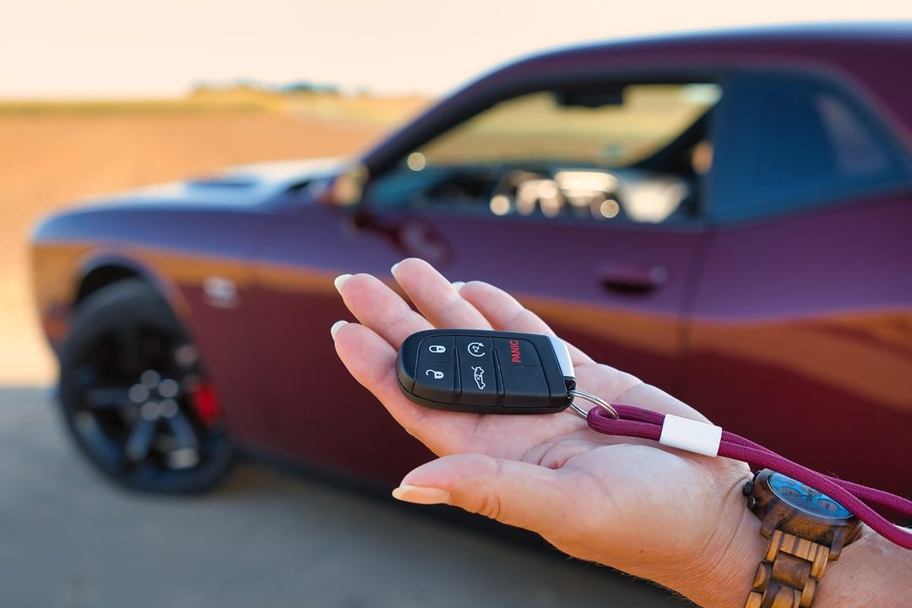
В отпуск летим в Турцию. Он решил взять с нами свою маму. Билеты, отель, трансфер на неё пополам с него — то есть половина моя. Спросила, почему я оплачиваю чужую путёвку. Он: «Мама не чужая, мы же семья». А когда я предложила взять сестру, ответ был: «Слишком дорого». Мама его семья, а сестра моя — нет?
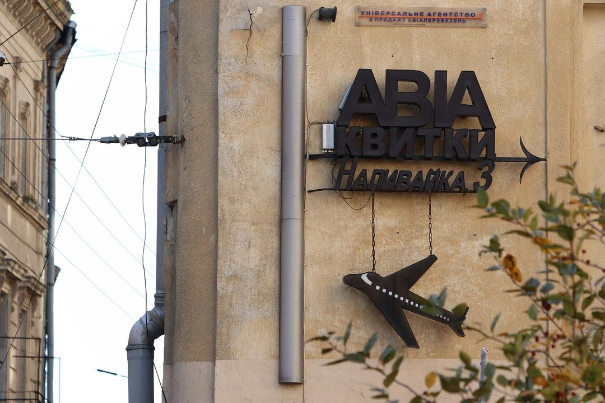
Он обедает на работе в кафе: 600 рублей в день. Это 13 тысяч в месяц. Мне он сказал брать контейнер из дома, потому что «кафе — расточительство». Я брала. Полгода. Потом увидела, что он купил себе новые кроссовки за 14 тысяч «просто так». Это я мелочная или он?
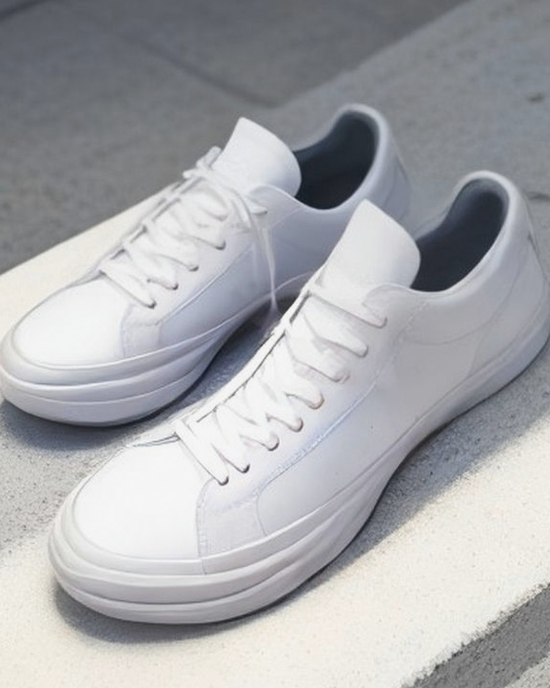
На 8 Марта мне подарили тюльпаны за 400 рублей и открытку. Его сестре на день рождения в феврале он купил сумку за 12 тысяч. Я видела чек. Спросила, почему так. Он: «Ну ты же не любишь пафос. Ты у меня скромная». Скромная. Удобное слово. Я просто хочу понять: я правда скромная или меня так приучили?
В декрете я получала 28 тысяч пособия. Он «давал» на продукты 20 и считал это щедростью. Зарплата у него при этом 140. Остальное уходило на «его нужды»: гараж, рыбалка, друзья. Когда я попросила на новую куртку, услышала: «Ты же дома сидишь, куда тебе». Я сидела с ребёнком 24 часа в сутки. Это «сидишь»?
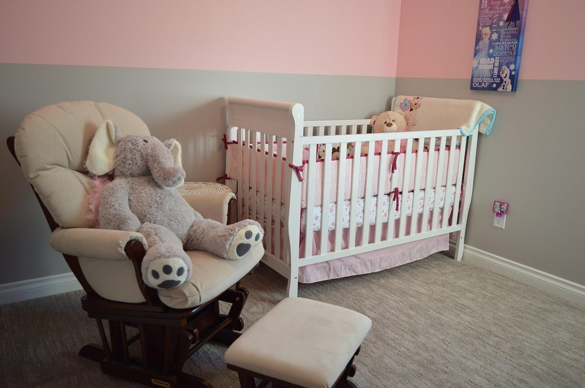
Первый взнос по ипотеке 800 тысяч дала моя мама. Квартира оформлена на него, «так проще для банка». Сейчас мы поругались, и он сказал: «Это моя квартира, я за неё плачу». Платим мы, кстати, пополам. Я не юрист. Но разве так бывает?
Он записался в зал за 4500 в месяц. Мне на фитнес «денег нет», потому что «йога есть на ютубе, бесплатно». Через месяц новая жалоба: «Ты что-то расслабилась». Я молча включила ютуб. Не спорила. Я зажралась, когда захотела тоже ходить в зал?
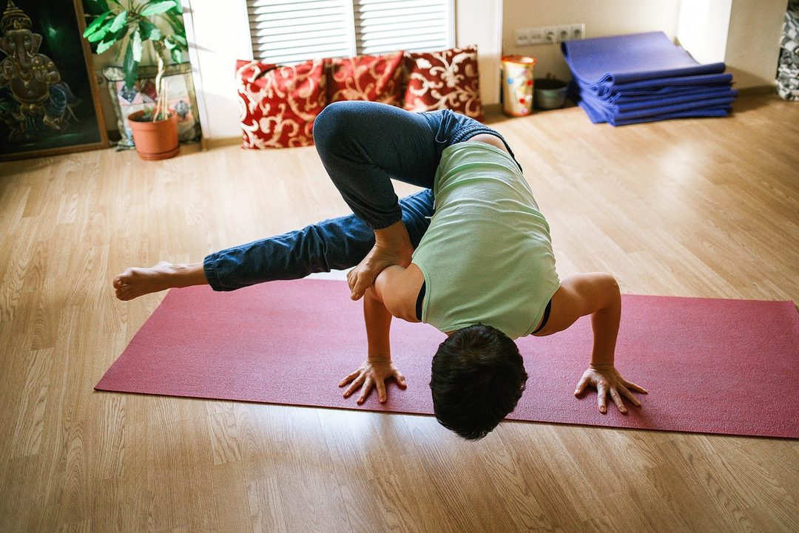
Моя стрижка с окрашиванием стоит 6 тысяч, и он назвал это «дорого, обычные женщины сами красятся». Его барбершоп: 2800 каждые три недели плюс чаевые. Я посчитала. За год у него выходит 48 тысяч, у меня 24. Он сказал: «Ты же не мужчина, ты не понимаешь». Не поняла.
Свекровь приезжает на месяц. Живёт у нас в комнате, я готовлю на четверых, стираю и убираю. Когда моя мама попросилась на выходные, он сказал: «Тесно, не сезон». Я не стала ругаться. Сказала маме, что мы заняты. Ей 61, и она ни разу не была у нас дольше двух дней. Я предательница по отношению к собственной матери?
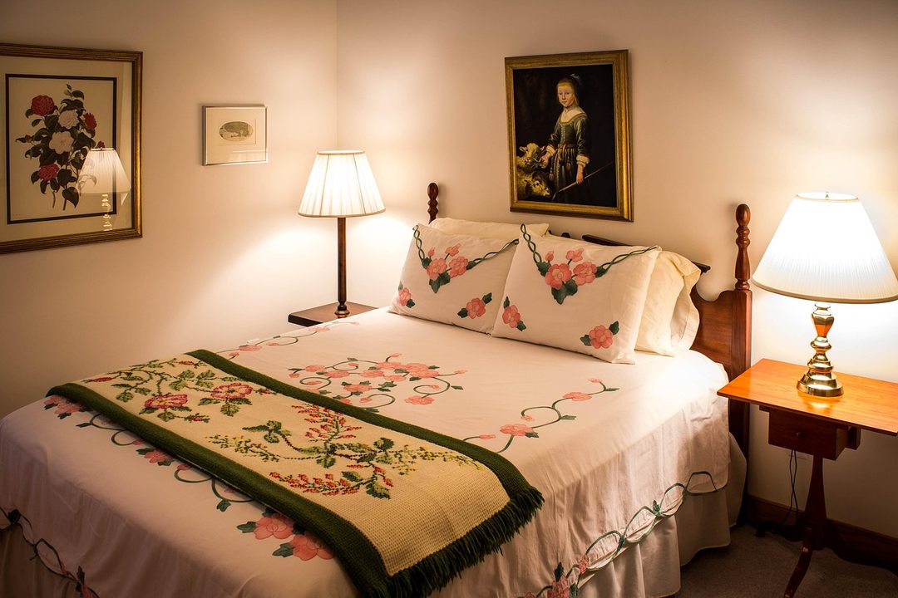
Каждый Новый год мы встречаем у его родителей. «Там же стол накрыт, большая семья». Моим родителям достаётся 2 января, «если успеем». Обычно не успеваем. В этом году мама молча накрыла стол на двоих. Я это видела на видео. Спросила его про очерёдность. Он: «Ну сама понимаешь». Я понимаю. Хочу, чтобы он понял.
Он получил премию 120 тысяч. Купил себе часы. Я получила 15 тысяч, и он сказал: «Отложим на ремонт». Часы я одобрила. Улыбалась. Хотя мы третий год ходим мимо сломанного смесителя. Вопрос: премия его, а ремонт общий?
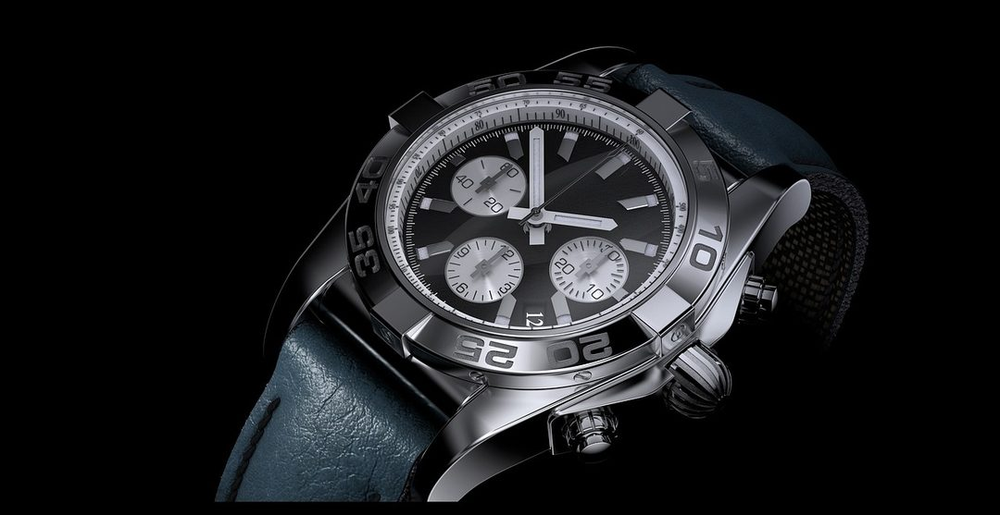
Ребёнок заболел, больничный взяла я. Уже четвёртый раз за зиму. У него «важный проект, ты же понимаешь». У меня тоже проект, просто его никто не считает важным, потому что я зарабатываю 52. Начальница мне прямо сказала: «Ты ненадёжная». Мужу рассказала. Он ответил: «Ну потерпи, найдёшь другую». Вот так вот, да?
Он проверяет чеки после магазина и вычёркивает «моё» из «общих» продуктов. Прокладки и крем для лица в минус мне. Его пиво и чипсы к матчу — «общие, мы же вместе смотрим». Я посчитала: за месяц он «вычел» 2300, а потратил на себя 5100. Показывать ему таблицу или это уже дно?
Он купил своей маме стиральную машину за 45 тысяч из нашей общей «подушки». Мои сапоги за 9 тысяч оказались «непозволительной роскошью». Говорю: давай продолжим «подушку» вместе. Он: «Не жадничай». Это я жадная?
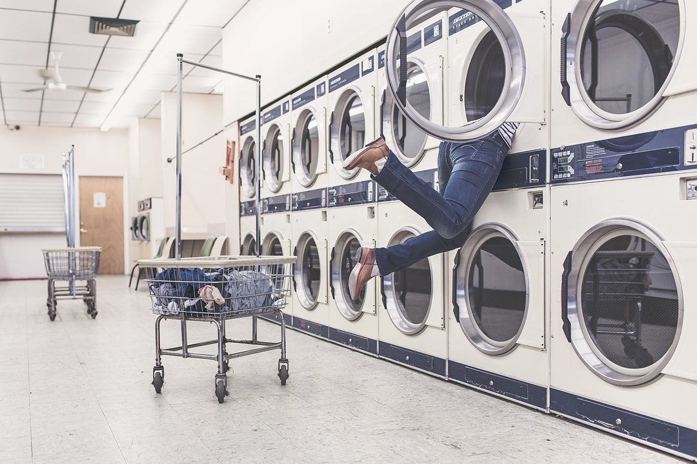
У нас Excel-таблица расходов. В ней есть строка «Её маникюр» и нет строки «Его рыбалка». Он объяснил: «Рыбалка — это не расход, это отдых». Маникюр, значит, расход. Я промолчала и в следующем месяце сделала маникюр дома. Кривой. Может, это я не понимаю базовые вещи?
На годовщину пригласил в ресторан. Счёт 7400. И когда принесли чек, он сказал: «Давай пополам, мы же современные». Я заплатила. Улыбнулась. Он ещё добавил: «Чаевые твои, ты же заказывала десерт». Десерт стоил 450. Это мой повод для развода или повод посмеяться?
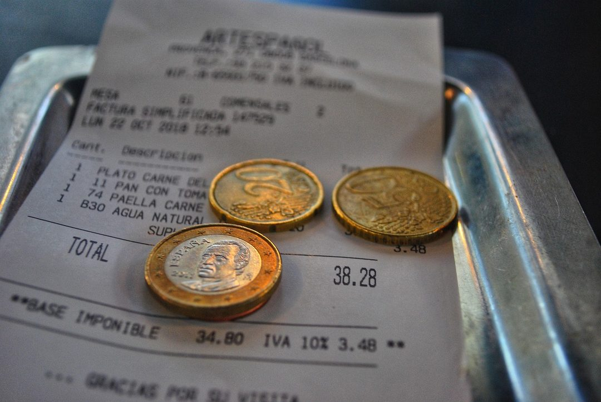
На день рождения он «подарил» мне деньги. 5 тысяч. Перевёл с общей карты. То есть я подарила себе подарок сама, а он получил благодарность. Я спросила, почему так. Он: «Ты же сама не знаешь, чего хочешь». Я знала. Хотела букет и чтобы он выбрал. Я многого прошу?
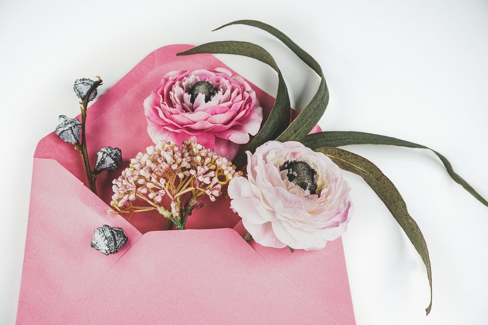
Его мама сидит с ребёнком по вторникам. Это «подвиг, надо ценить, купи ей торт и цветы». Когда с ним сидит моя мама пять дней в неделю, это «нормально, она же бабушка». Я не против торта. Но хочу, чтобы мою маму тоже благодарили. Просто попросила. Он назвал это «счётами».
Сказал, чтобы я не красилась на работу: «Ты же не для кого, у тебя муж есть». Себе он в этом месяце купил парфюм за 11 тысяч. «Это для работы, там клиенты». У меня тоже клиенты. Я администратор клиники. Он: «Ну сравнила». Вот я и сравнила. И что?
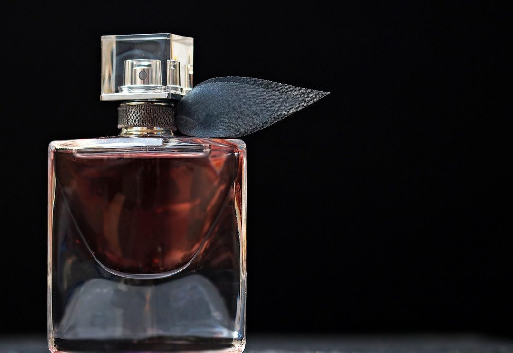
Мы копим на отпуск. Я откладываю 20 тысяч в месяц из зарплаты в 65. Он откладывает 5 из 160. «У меня расходы». Какие расходы, не уточняет. В итоге отпуск планируется «по бюджету», то есть по моему вкладу. А место выбирает он. Я зажралась, если хочу, чтобы он положил хотя бы 40?
Мои 65 тысяч он называет «карманными». Так и говорит друзьям: «У жены на булавки». Я плачу за садик и половину еды. Булавки, ага. На семейном ужине я при всех спросила, почему так. Он засмеялся: «Шучу». Свекровь одобрительно кивнула. Я шуток не поняла. А вы?
Он требует отчёт по каждой моей покупке свыше 2 тысяч. «Мы же команда». Свои покупки в отчёт не включает. Недавно появился новый телефон за 80. Спросила, почему не согласовал. Он: «Это мои деньги». То есть команда, но капитан один?
Бабушка оставила мне 300 тысяч. Он сразу сказал: «Ну это же в семью». Свой гараж от отца он называет «моё, наследство, не трогай». Я предложила вложить мои деньги в ремонт при условии, что мы оформим долю на меня. Он обиделся: «Ты мне не доверяешь». Или это он мне не доверяет?
Кружки ребёнка оплачиваю я: английский, плавание, рисование. Это 11 тысяч в месяц. Он считает, что «ты же мать, ты лучше знаешь». Когда я попросила разделить хотя бы пополам, он сказал: «Тогда сократи кружки, раз денег нет». Сократили. Ребёнок плачет, что остался без плавания. Теперь я виновата, да?
Юбилей свекрови. Подарок «от нас» стоил 25 тысяч. Из них 20 моих. Но в открытке написано «от сына с женой», а на словах она благодарила только его. «Спасибо, сыночек». Я стояла рядом с пирогом в руках. Он потом: «Ну ты что, это же формальность». Формальность. А деньги настоящие.
В пятницу он ужинал с друзьями на 5 тысяч, а я осталась с ребёнком. Он вернулся в час ночи. В субботу я попросила отпустить меня к подруге на два часа. Он: «Я устал, не могу, ты же весь день дома». Весь день дома — это с температурным малышом. Я просто хотела выйти. Просто выйти.
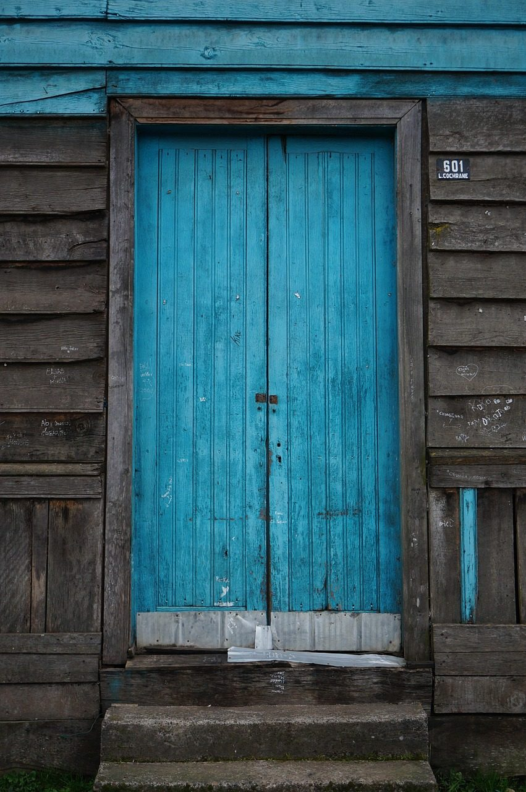
На ремонт мы взяли кредит. Он выбирал диван за 90 тысяч. Я хотела посудомойку за 30. «Посудомойка — это для ленивых, руками помоешь». Угадайте, кто моет. Диван я признаю — красивый. Но почему мой выбор всегда «лишний»?
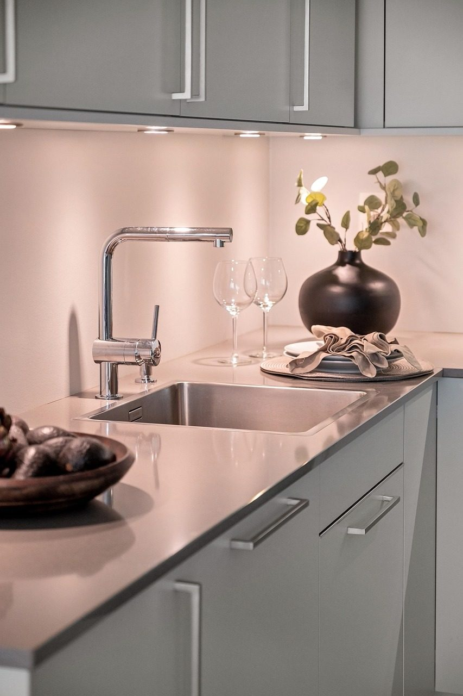
Он оформил себе страховку на 60 тысяч в год «чтобы всё было спокойно». На меня «пока рано». Мне 33, у меня была операция в прошлом году, и оплачивала её я. Это не забота, а расчёт? Или я накручиваю?
Моей маме на 60 лет он подарил открытку и конфеты за 500 рублей. Его маме на 60 лет он выбрал телевизор за 70 тысяч, «ну у неё же старый». Я промолчала. Он этого даже не заметил. А если бы я заметила вслух, был бы скандал на неделю. Вот скажите: это мелочь?
Он ест мясо, я нет. Но продукты в основном покупаю я, потому что он «не разбирается». При этом мои продукты он называет «травой за бешеные деньги». Овощи и крупы — 8 тысяч, мясо — 15. Мясо он покупает сам и «для общего». Общего с кем, если я его не ем?
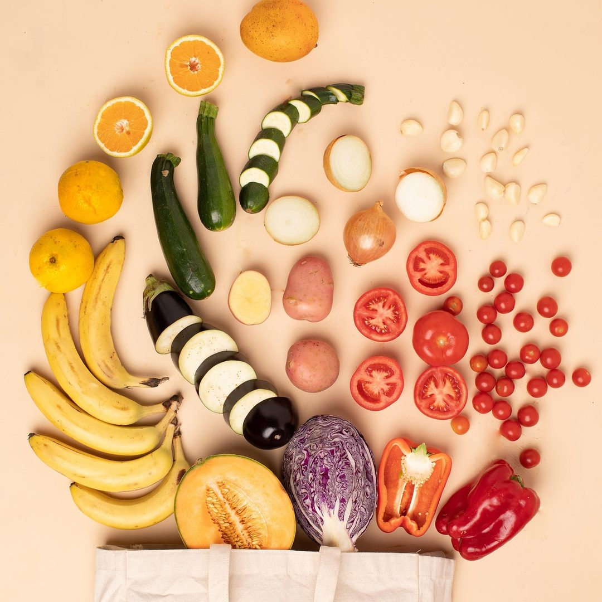
Попросила у него хотя бы на косметолога раз в квартал. Он сказал: «В тридцать лет косметолог не нужен, надо просто больше спать». Через неделю записался на лазерное удаление родинки «для себя». 14 тысяч. Обидно, что он ни разу не спросил, как я себя чувствую со своим лицом. Я что, придираюсь?
Он хочет второго ребёнка. «Рожай, мы потянем». Тянет у нас моя зарплата в 58 и его 170. Но из его 170 половина уходит на машину и «личное». Я спросила, когда он планирует сократить «личное». Он: «Вот родишь, тогда и поговорим». Поговорим. После. Вы бы согласились?
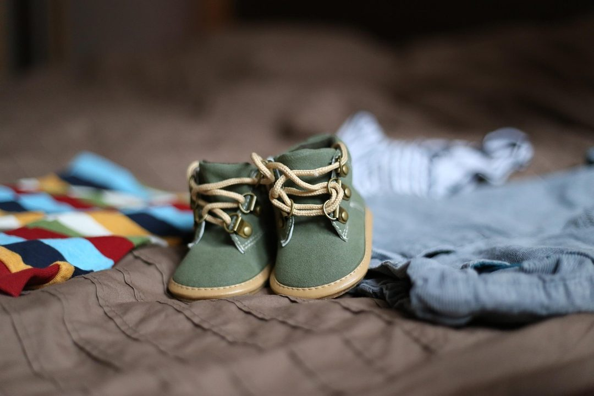
Кольцо на помолвку он подарил за 18 тысяч. Сказал: «Цени, это не дёшево». Через год подарил своему другу на свадьбу телевизор за 40. Я тогда не поняла, где оказалась в иерархии. Сейчас, кажется, поняла. Или у меня мания считать?
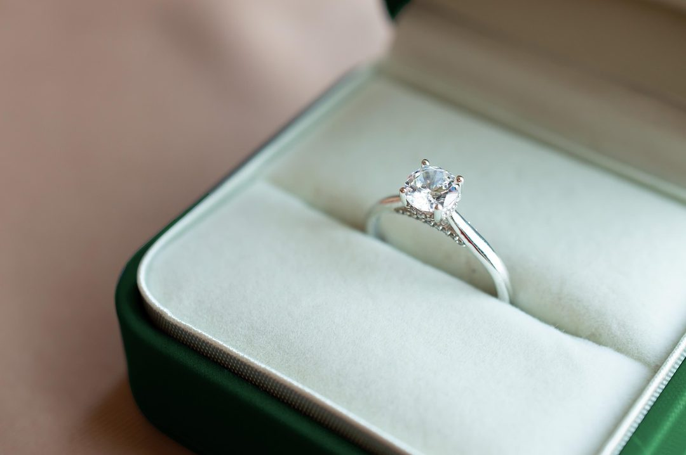
Он купил себе новый телефон за 110 тысяч. Свой старый отдал мне, «он ещё хороший». У телефона батарея держит три часа и экран с трещиной. Я не жаловалась. Пользуюсь. На днях подруга спросила: «Ты что, ему в прислуги записалась?» Я ответила, что мне ничего не нужно. А почему тогда обидно?
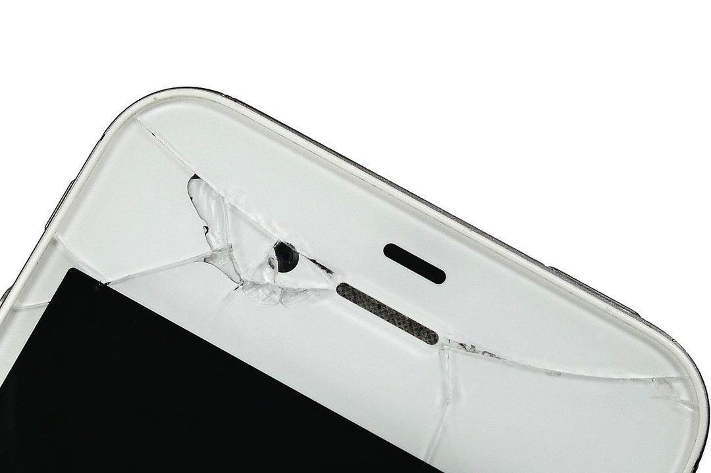
Сломалась стиральная машина. Я предложила купить новую вместе. Он: «Это твоя техника, ты ею пользуешься, ты и покупай». А когда его пылесос-робот вышел из строя за 40 тысяч, мы купили новый «вместе». Я не поняла разницу. Он объяснил: «Робот — это для дома». А стиралка тогда для чего?
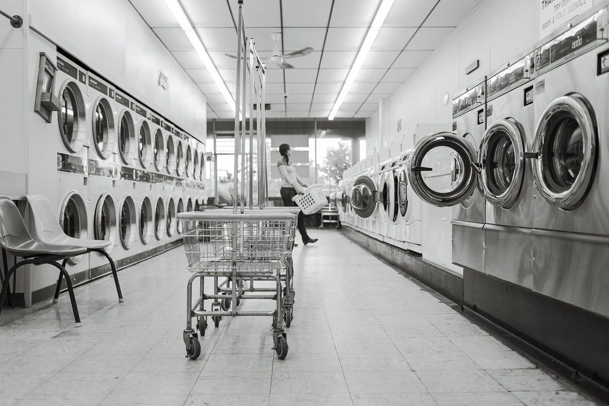
Налог на машину и страховку платит он. Но «машина общая» только тогда, когда я ему нужна как водитель. Он перебрал, мы поехали домой, за руль села я. В другой день я прошу подвезти ребёнка: «Не могу, у меня встреча». Общая машина, да?
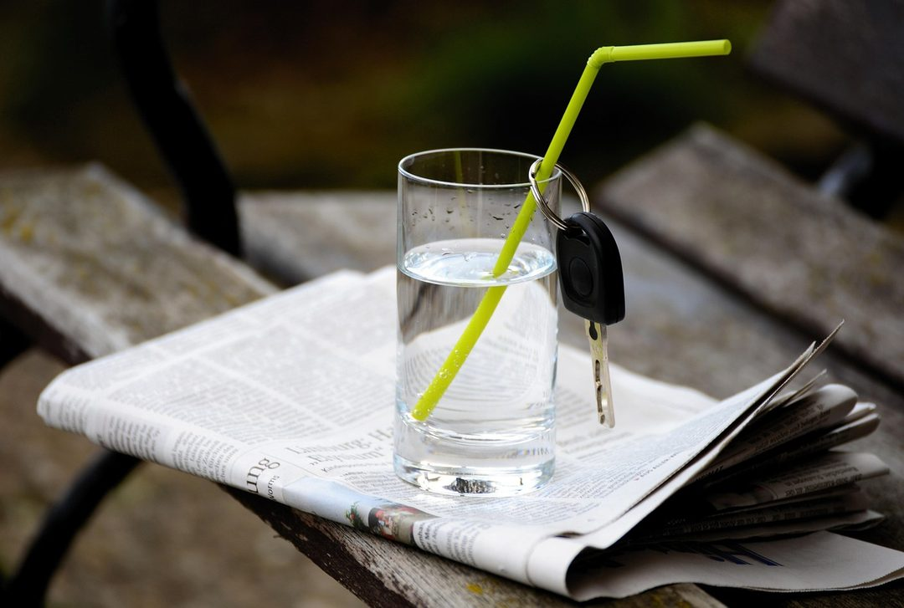
Я пью два кофе в неделю в кофейне. Это 600 рублей. Он считает: «Лучше бы дома варила». Сам тратит на сигареты 7 тысяч в месяц и не считает это расходом. Когда я сказала, что это вредно и дорого, он ответил: «Это моё». Мой кофе его не устраивает, а его дым устраивает меня. Справедливо?

На даче его родителей я весь отпуск пропалываю грядки, мою посуду на двадцать человек, жарю шашлык. Его мама говорит гостям: «Это наша невестка, труженица». А его сестра приезжает на два часа с готовым тортом, и ей аплодируют. Я вернулась без отпуска. Он спросил: «Ты что, не отдохнула?» Не отдохнула. И говорить об этом нельзя.
Своей зарплаты не стыжусь: 140 тысяч. Муж получает 70. Но «пополам» мы платим всё. Коммуналку, еду, ипотеку. Я так предложила сама, думала, это честно. Теперь он гордится: «Я наравне с тобой вношу». Наравне — это половина от моей зарплаты и вся от его? Я не жадничаю. Мне просто обидно.

Мой отпуск 14 дней. Его 28. Он проводит их на даче у мамы. Я должна ехать с ним, «ну куда ты ещё». В этом году я попросила три дня на море вдвоём. Он: «Дорого, давай на следующий». Это «следующий» уже третий год. Я правда не имею права на отпуск, который не у его мамы?
Я хотела шубу. Обычную, за 40. Он сказал: «Ты опять? У тебя же есть пуховик». Пуховик 2019 года, молния заедает. Через месяц он «неожиданно» купил себе зимнюю куртку за 35 тысяч, потому что «мне же ездить на объекты». Я ездить на объекты не имею права?
Он оплатил маме санаторий на 60 тысяч. Деньги взял с нашего накопительного счёта, куда мы откладывали на машину мне. Я узнала из выписки. Он: «Ей нужнее, она старенькая». Что ж, я с этим согласна. Не согласна с тем, что меня не спросили. Я нервничаю зря?
Свадьбу оплачивали пополам. У него пришло 80 гостей, у меня 15. «Пополам, потому что справедливо». Его родня заказывала по самому дорогому в меню. Спустя два года его мама до сих пор вспоминает, что мы «скромничали с банкетом». А я до сих пор помню, как моя мама считала копейки на подарок. Это справедливо?

Подарок на 14 февраля. Я потратила 3500 на хороший ремень. Он потратил 0 рублей, подарил мне открытку, нарисованную в телефоне. Сказал: «Главное внимание». Через неделю он обиделся, что я не приготовила особенный ужин на его годовщину работы. Внимание нужно только одной стороне?
Он ездит на такси, потому что «нет сил в метро». 400 рублей в день, 9 тысяч в месяц. Я езжу в метро, у меня силы «есть». Когда я сказала, что тоже устаю, он ответил: «Ты же женщина, вам легче». Ничего не ответила. Уехала в метро. Мне как-то обсуждать с ним это дальше?
Он против няни за 25 тысяч: «Дорого, мама поможет». А его мама работает и может раз в неделю. Зато тюнинг машины за 30 он выбрал без вопросов. «Это же вложение». Вложение во что, интересно? В пластик. Я осталась без работы после декрета. Он: «Устроишься позже». Я зажралась, что хочу, чтобы у меня тоже были варианты?
Принёс домой премию 40 тысяч. Я обрадовалась: наконец-то сможем закрыть кредит за холодильник. Через два дня он купил удочку за 38. «Надо было брать, акция». Холодильник, к слову, на моё имя. Спросила, почему не посоветовались. Он: «Я что, обязан отчитываться?» Выходит, у меня обязанности есть, а у него нет?
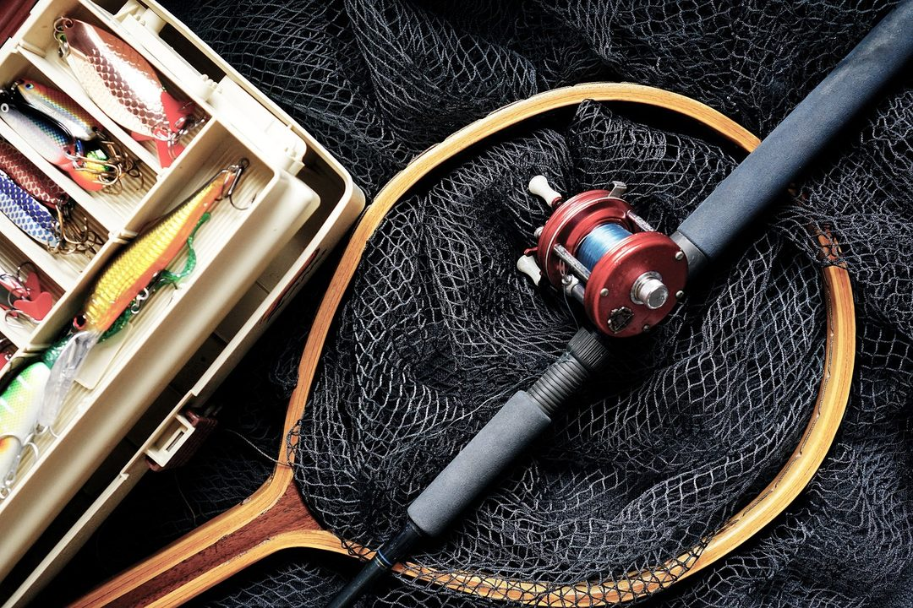
Ночью ребёнок плакал, вставала я. Все три месяца. Он: «Мне надо работать, я кормилец». Я тоже работала. Из дома, на подработке. Просто это «не считается», потому что 25 тысяч. На этой неделе я не выдержала и заплакала при нём. Он сказал: «Не драматизируй». Скажите честно: драматизирую?
Моя мама приехала помогать с внучкой на две недели. На третий день он спросил: «А надолго она у нас?» Его мама жила у нас месяц, и я ни слова не сказала. Сейчас мама собирает вещи, а я чувствую, будто выставляю её за дверь. Он говорит: «Я просто спросил». Просто спросил. А мне теперь жить с этим.
На мой день рождения: «Подарки не обязательны, мы же не дети». На его день рождения я заказала стол на двадцать человек и подарок за 15. Он был «растроган». Теперь мой следующий день рождения через месяц. Я не жду ничего. Но внутри всё равно сжимается. Это нормально?
Телефон себе взял в кредит на 80 тысяч. Платить «из общего», «мы же семья». Свои покупки в кредит я никогда не делала, потому что он говорил: «Кредиты — это зло». Для него, видимо, кредиты — зло, когда это я. Правильно ли я понимаю, что в нашей семье правила для двоих разные?

Он подарил мне абонемент на похудение «чтобы ты порадовала себя». Не спрашивал, хочу ли я. Просто положил на стол. А когда я попросила его подарить мне путёвку на массаж, он сказал: «Ты что, больная?» Мне подарили напоминание о моих недостатках. Или я неблагодарная?

Он отдал сестре 50 тысяч в долг. «Ей надо на зубы». Мне на зубы пришлось копить самой. 38 тысяч заняло полгода. Он узнал, когда я записалась. Сказал: «А что, раньше нельзя было потерпеть?» Сестра, кстати, не вернула. Он не напоминает. Объясните мне логику, пожалуйста.
Мы ходим в кино раз в месяц. Билеты платит он, а попкорн и колу я «потому что хочу». Хотя пьёт и ест он больше. Один раз я не взяла. Он весь фильм вздыхал. Я не жадничаю. Я просто устала, что за мелочи нужно платить мне. Мне это кажется или это странно?
Он любит повторять: «Я тебя содержу». Содержит — это когда я получаю 60, он 150, а на продукты, детские вещи и садик мы вкладываем поровну? Я эти цифры показала. Он обиделся и неделю не разговаривал. Правда обижает его больше, чем меня ситуация?
Подруга собралась замуж и спросила, что я думаю про брачный договор. Я сказала, что это недоверие. Через год мы с мужем развелись, и я осталась в его квартире без прав, хотя вложила в ремонт 600 тысяч. Теперь думаю, что недоверие было у меня к себе. Это нормально, что я так и не поняла этого раньше?
Он выбирает, где нам жить, где отдыхать, какую машину брать и в какую школу водить ребёнка. Я выбираю, что приготовить на ужин. Когда я сказала, что хочу участвовать в решениях, он ответил: «Так у тебя же голос есть, я слушаю». Слушает. И делает по-своему. Я одна это замечаю?
Я получила повышение: теперь 120 тысяч вместо 70. Радовалась. Муж сказал: «Ну теперь ты можешь платить больше за коммуналку». Ни «поздравляю», ни ужина. Только пересчёт процентов. Я хотела хотя бы раз побыть просто рада. Может, я слишком много хочу?
У него «важные» встречи с друзьями каждую пятницу. Я не хожу, потому что «женам там скучно». На мои встречи с подругами он смотрит с подозрением. «А что вы там обсуждаете? Меня?» Мы реально обсуждаем нас. И что он ни разу не спросил, чего я хочу. Это ревность или контроль?
Он «подарил» мне на новоселье набор кастрюль. Я до сих пор не знаю, чья это была идея. А себе он на новоселье купил игровое кресло за 30 тысяч. На мой вопрос ответил: «Кастрюли пригодятся. Кресло — для работы». Он работает в офисе. Кресло стоит дома. Может, это такая шутка, которую я не поняла?
Мне нельзя тратить на себя больше 3 тысяч без согласования. «Мы же не богачи». Он на рыбалку и охоту потратил за год 130 тысяч. Это «хобби, а хобби дорогое». А у меня, видимо, хобби нет. Потому что на моё хобби «не хватает». Я не хочу ссор. Хочу справедливости. Это разные вещи?
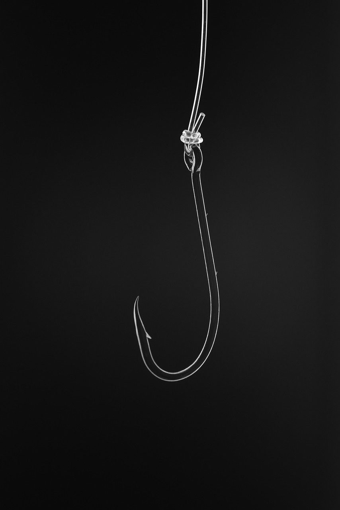
Мы развелись два года назад. Алименты он платит с официальных 18 тысяч, хотя на деле у него 200. Новой жене купил машину за 1,5 миллиона. А мой сын ходит в обуви на размер больше, потому что «растёт». Я не требую лишнего. Только честности. Кто-нибудь знает, как с этим жить?
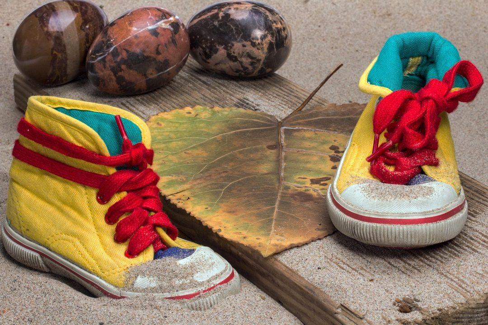
Я зарабатываю 90, он 85. Но по дому всё делаю я, потому что «у меня лучше получается». Лучше получается, потому что он не пробует. Стоило мне заболеть, как в квартире через три дня начался хаос. Он: «Тебе вообще положено болеть?» Это его способ заботы?
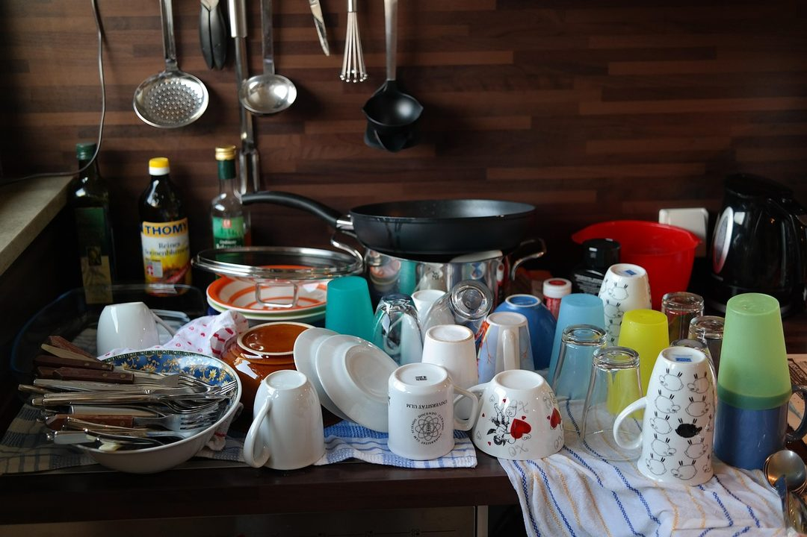
Я скучаю по тому времени, когда мы платили пополам и были студентами. Тогда не было вопросов. Теперь у него 220, у меня 70, и «пополам» превратилось в карательную меру. Я уже не знаю, как просить пропорционально. Каждая моя просьба звучит как «жадность». Может, правда проблема во мне?
Мой муж «не любит дарить цветы». «Они же завянут, это глупость». На 8 Марта мы ходили в магазин, я сама выбрала себе букет. Он оплатил, но довольно вздыхал. На юбилей его матери цветов было на 5 тысяч. Я подумала: может, дело не в цветах?
Я зарабатываю 200 тысяч в месяц. Жена тратит на себя 90: маникюр, косметолог, спа, одежда. Сама работает администратором на 45. Когда я предложил сократить хотя бы до 60, она сказала, что я «душный» и «не ценю её красоту». Красоту я ценю. Но за 90 хочется видеть и вклад. Может, я неправ. Скажите.
Жена хочет шубу за 280 тысяч. Говорит: «Заслужила». Чем именно? Она работает на полставки, а ребёнку 7 лет. Я зарабатываю 380 и не покупал себе ничего дороже 60 за последние три года. Я предложил шубу за 120. Она обиделась на неделю. Это я скупой? Может, и правда неправ.
Жена зарабатывает 40, я 250. Она предложила делить коммуналку и еду пополам. Я согласился с одним условием: пропорционально зарплате. Теперь она говорит, что я «считаю деньги, как бухгалтер» и «в нормальной семье так не делают». В нормальной семье пополам, но не пропорционально? Скажите, я неправ?

Жена в декрете и требует «зарплату» за уход за ребёнком. Назвала сумму: 60 тысяч в месяц. Я зарабатываю 300 и оплачиваю всё: ипотеку, машину, еду, садик на будущее. Я ей сказал: тогда тебе придётся платить за аренду своей половины квартиры. Она в слезах ушла к маме. Я перегнул? Скажите честно.
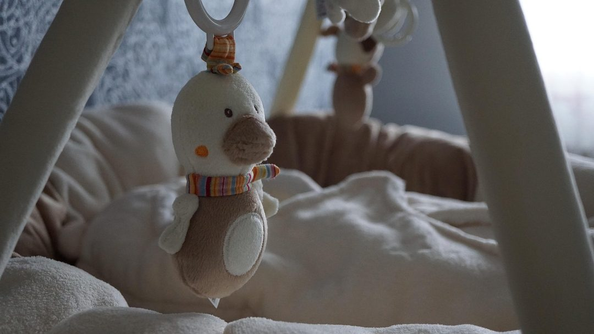
Я плачу ипотеку 68 тысяч, а жена хочет, чтобы я ещё мыл полы и готовил ужин по очереди. Она работает с 9 до 18, я с 8 до 21 плюс дорога. Я предложил ей тоже взять подработку, а я займусь домом. Она засмеялась: «Ты не потянешь». Не потяну дом, но потяну всё остальное? Может, я неправ. Скажите.
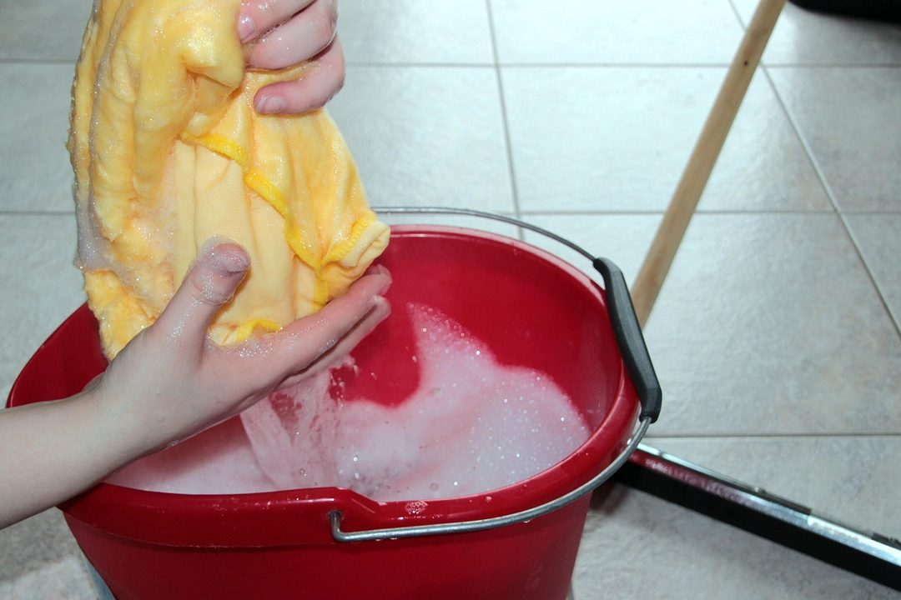
Тёща просит у меня 100 тысяч на ремонт дачи. Не «в долг», а «зятёк, ну ты же можешь». Я зарабатываю 280. Могу, да. Но у неё есть сын, который получает 90 и ничего не даёт. Жена на моей стороне? Нет, она говорит: «Это твоя семья теперь». А её брат тогда чей? Может, я неправ. Скажите.
Жена тратит на ногти и ресницы 11 тысяч в месяц. Я на себя, на стрижку и обувь, 4. Когда я указал на разницу, она сказала: «Это моя работа — выглядеть хорошо». Её работа — менеджер по продажам, и ногти ей не оплачивает компания. Я зарабатываю 190, она 55. Может, я неправ. Скажите.

Её маме нужна операция за 400 тысяч. Я готов дать 150. Жена требует всё, потому что «ты же мне муж». Но моей маме, когда она сломала ногу, я помогал на 20 тысяч, и жена сказала: «Слишком много». Одинаково ли это вообще? Может, я неправ. Скажите.
Подарок на 8 Марта: я выбрал сертификат на 15 тысяч в магазин косметики. Она поморщилась: «Ну хоть что-то». На мой день рождения она подарила носки и кружку. Я не жалуюсь на носки. Но «хоть что-то»? Зарплата у меня 240, у неё 70. Каждый раз я чувствую, что должен. Может, я неправ. Скажите.
Она не хочет брать мою фамилию, но хочет, чтобы я «держал на себе семью». Говорит: «Это разные вещи». Я зарабатываю 260, она 80. Квартира в ипотеке на мне, машина тоже. Фамилия — это мелочь, согласен. Но если это «разные вещи», тогда и деньги тоже разные. Может, я неправ. Скажите.
Жена тратит на детские развивашки 30 тысяч в месяц: музыка, танцы, ментальная арифметика. Ребёнку три года. Я зарабатываю 210 и считаю, что это перебор. Она: «Ты не хочешь, чтобы ребёнок развивался». Хочу. Но я не хочу, чтобы он развивался в долгах. Может, я неправ. Скажите.
Предложил жене брачный договор. Мы женаты два года, у меня квартира от бабушки и бизнес, который я строил до брака. Она в слёзы: «Значит, ты не веришь в нас». Я верю. Но я видел три развода друзей. Договор — это разве не про ответственность? Может, я неправ. Скажите.
Жена ушла с работы «найти себя». Прошло 8 месяцев. Нашла курсы по таро и ещё какой-то марафон желаний. Я зарабатываю 270 и тяну всё один. Курсы, кстати, 90 тысяч. Когда я осторожно спросил про сроки, она заплакала, что я её «не поддерживаю». Поддержать — значит платить без конца? Может, я неправ. Скажите.
Хочу 50/50 на жильё. Первый взнос в 2 миллиона внёс я, потому что у жены накоплений ноль. А она считает, что квартира «наша пополам», ведь «мы же семья». Я не против оформить на двоих. Но тогда пусть вернёт хотя бы часть. Она: «Ты меня покупаешь». Может, я неправ. Скажите.
Каждый год жена хочет за границу: Турция, Египет, Таиланд. Я зарабатываю 230, отпуск у нас обычно 250 тысяч на двоих. Предложил в этом году Сочи за 90. Она: «Ты хочешь, чтобы я дышала на дешёвом курорте?» Мне 36, и я мечтаю не о Таиланде, а о том, чтобы мы закрыли кредит. Может, я неправ. Скажите.
Жена не хочет возвращаться на работу, когда ребёнок пошёл в сад. Ему уже четыре. Я зарабатываю 320. Но мы живём на пределе, потому что она «ещё не готова». Я предложил хотя бы на полдня. Она: «Ты мне не доверяешь, что я справлюсь с домом?» Я не про дом. Я про бюджет. Может, я неправ. Скажите.
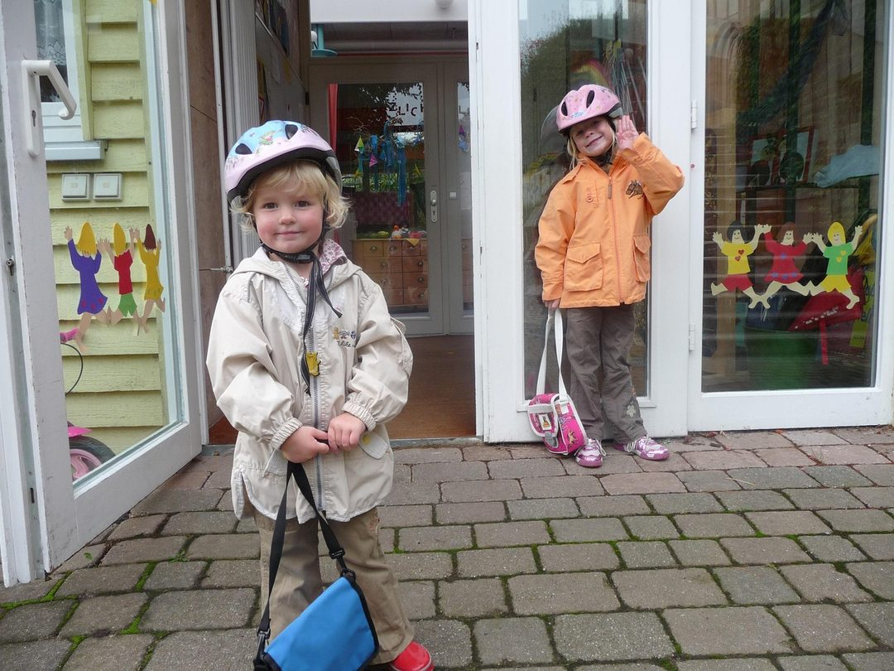
Она хочет, чтобы я «угадывал» её желания. Я не угадываю. Я спросил, она сказала «сам подумай». Подумал, купил ей фен за 15 тысяч, а ей нужны были духи. Теперь я «не понимаю женщин» и «ничего не ценю». Зарплата у меня 200, у неё 60. Я стараюсь. Может, я неправ. Скажите.
У жены кредитка на 150 тысяч, о которой она рассказала мне только после просрочки. Говорит: «Не хотела тебя расстраивать». Я зарабатываю 250, платежи закрыл сам. Но доверие закрыть не получилось. Теперь она обижается на мой «контроль». Я смотрю в её выписки, потому что боюсь следующей кредитки. Может, я неправ. Скажите.
Жена откладывает «на себя» по 20 тысяч в месяц и не говорит, на что. У меня такой привычки нет, всё идёт в семью. Я зарабатываю 200. Она 65. Когда спросил, что за «подушка», ответила: «Это на случай, если мы расстанемся». Если ты готовишься к расставанию, зачем замужем? Может, я неправ. Скажите.

Жена хочет няню за 35 тысяч в месяц, чтобы «вернуть себя». Она не работает. Я зарабатываю 280 и вижу, как она весь день на кофе с подругами и по магазинам. Предложил садик. Она: «Мой ребёнок не будет жить по режиму». Вернуть себя — это значит перекинуть всё на меня и няню? Может, я неправ. Скажите.
У меня зарплата 400, у жены 50. Она постоянно пилит за скидки и акции в магазинах: «Давай экономить». А потом заказывает одежду за 25 тысяч и называет это «инвестиция в имидж». Мне приходится слушать про 20 рублей экономии на молоке. Это двойные стандарты или это я не понимаю? Может, я неправ. Скажите.
Я не обязан содержать её родителей. Они живут в соседнем городе, у них пенсия 28 и 25 тысяч. Жена хочет, чтобы я ежемесячно переводил им по 15. Я зарабатываю 230. Помогать иногда готов. Но «ежемесячно» — это уже договор без подписи. Жена говорит, что я «чёрствый». Может, я неправ. Скажите.
Я не хочу, чтобы жена зарабатывала больше меня. Мне 38, у меня 180. Ей предложили 260. Она рада. Я нет, и мне стыдно в этом признаться. Она сказала: «Ты завидуешь». Нет, я боюсь, что перестану быть нужным. Зато честно. Может, я неправ. Скажите.
Жена просит считать её время дома работой и платить за него. Но если я работаю из дома, это «просто сидишь». Я зарабатываю 300, она 0. Предложил подсчитать её «часы» и сравнить с моими. Она обиделась: «Ты не понимаешь». Давайте посчитаем? Может, я неправ. Скажите.
Скажу непопулярное: «пополам» работает только при равных зарплатах. Иначе это не равенство, а вычитание из того, кто получает меньше.
Скажу непопулярное: если он покупает себе ПС за 55 тысяч, а вам говорит «дорого», вы не в паре. Вы на удалёнке у соседа.
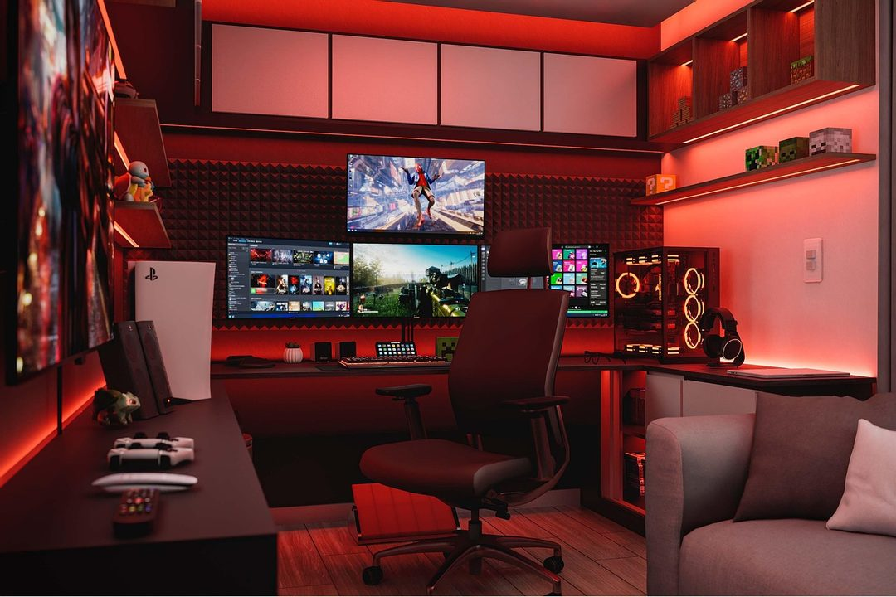
Скажу непопулярное: фраза «ты же сама согласилась на пополам» не оправдание, если зарплаты отличаются втрое.

Скажу непопулярное: нельзя называть щедростью то, что человек дал ровно на то, чтобы вы не умерли с голоду.
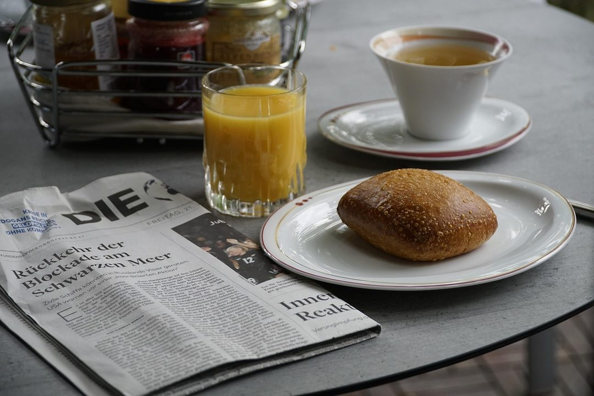
Скажу непопулярное: когда «мама не чужая», а ваша мама «лишний рот», это не семья, это односторонняя лояльность.
Скажу непопулярное: женщина, которая вкладывает в ипотеку, но живёт в квартире, оформленной на мужа, не жена, а арендатор без договора.
Скажу непопулярное: подарок «на что-нибудь себе» на деньги из общей карты — это не подарок, это отчёт о вашем же бюджете.
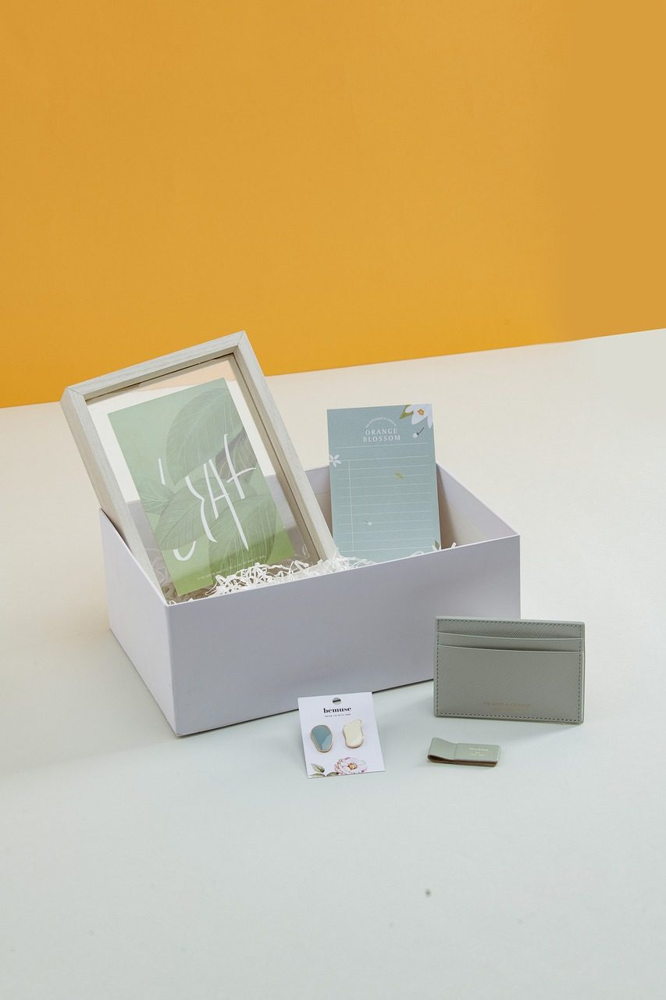
Скажу непопулярное: если муж считает ваши покупки, но не показывает свои, это не бюджет. Это надзор.
Скажу непопулярное: «Ты же дома сидишь» после ночи с больным ребёнком — самая дешёвая фраза, которую можно сказать любимому человеку.
Майя @mayathreadsche
Скажу непопулярное. Парень, который не платит на первом свидании, сэкономил тебе время. Дальше можно не тратиться на укладку. Вы за «пополам» или за «платит он»?
Подарок за 3 тысячи от парня с зарплатой 200 — это не про деньги. Это про то, что он вообще о тебе думал. А вы смотрите на чек или на жест?

Подруга, которая всегда опаздывает, тебя не уважает. Не «у неё такой характер». Просто твоё время для неё ничего не стоит. Я слишком строгая?
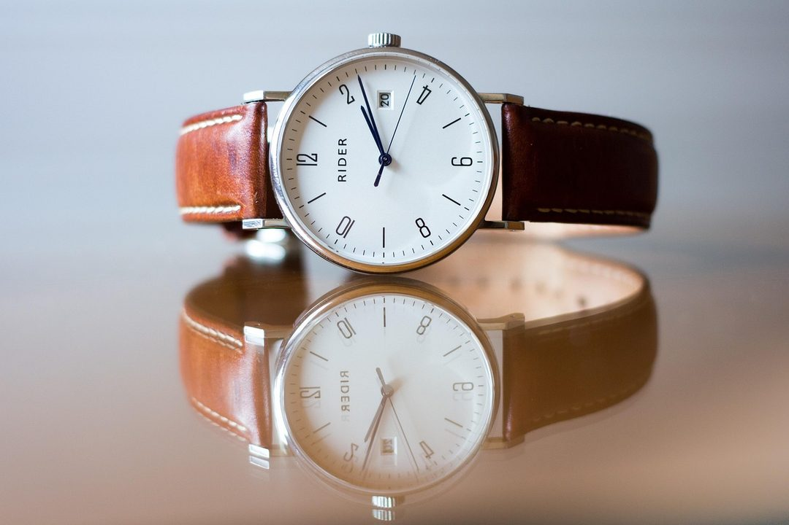
Маникюр — это не роскошь, а гигиена. Да, это несправедливо. Да, оценивают по рукам. Кто со мной, а кто за «и так сойдёт»?
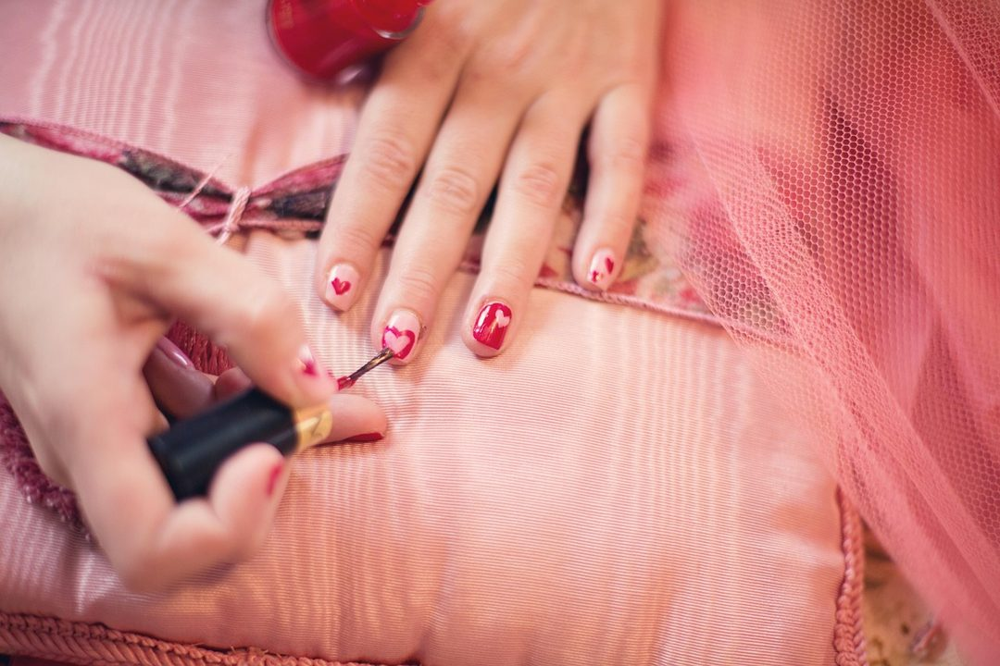
Крем за 6 тысяч не работает лучше крема за 600. Ты платишь за баночку и за ощущение, что себя любишь. И это тоже нормально. Вы за люкс или масс-маркет?
Свадьба за 2 миллиона вместо первого взноса на квартиру — спектакль для гостей, которых ты увидишь один раз. Я одна так думаю?
Офис или удалёнка? Мне в офисе проще: там есть повод накраситься и выйти из дома. На удалёнке я неделю хожу в одной толстовке. Вы 1 — офис или 2 — удалёнка?
В 25 тебе говорят «пора рожать», в 35 — «чего так поздно». Выиграть нельзя. Поэтому делай, когда сама захочешь.
Мамин совет «найди нормального мужчину» стоит ровно столько, насколько мама счастлива в браке. Грустно, но логично.
Бывшая подруга — это не «мы просто разошлись». Это человек, который показал себя, когда ты перестала быть удобной. Согласны?
Если парень говорит «я не люблю тратить на подарки», он не любит тратить на тебя. Может, я жестокая, но проверьте на практике.
Фраза «я не такая, как все девушки» обычно значит «я не люблю других девушек». Мне это надоело слушать. А вам?
Хочешь узнать мужчину — смотри, как он говорит с официантом. Всё остальное на свидании театр.
Дружба парня и девушки существует. Но в половине случаев кто-то один тихо ждёт. Спорьте со мной.
Ты пишешь первой, он отвечает через 5 часов. Он не занят. Он выбирает. И не тебя. Больно, зато честно.
Самая дорогая экономия — дешёвая косметика, от которой аллергия. Потом платишь вдвое: врачу и новой косметике. Проверено на себе.
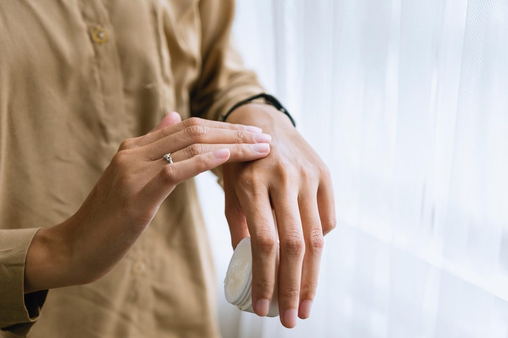
Заплатить за такси девушке — не патриархат, а вежливость. А она в ответ платит за кофе — это взаимность. Почему из этого сделали войну?
Девочки, которые в 22 вышли замуж, тебя не «опередили». Они просто пошли по другой дороге. Но ты всё равно сравниваешь, да?
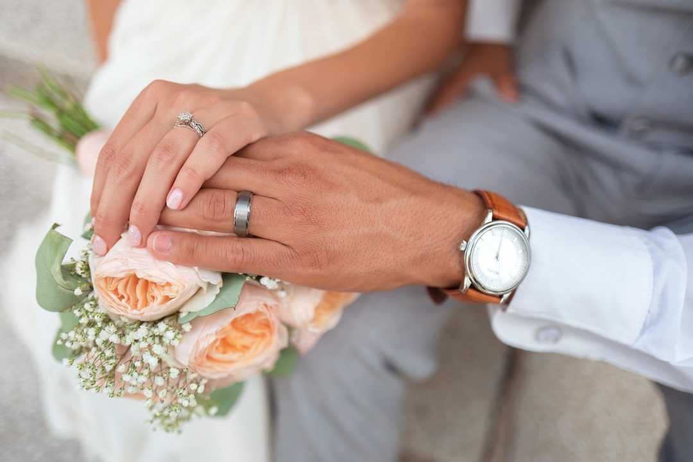
Кофе за 400 рублей каждый день — это не глупость. Ипотеку он не закроет, но и жить без маленьких радостей — так себе идея. Согласны?
Если в 27 у парня нет никаких планов на будущее, то тебя в этих планах тоже нет. Без обид, просто факт.
Не понимаю, когда «нет денег» говорит человек, у которого есть деньги на игры, пиво и новый телефон. Это не безденежье, это приоритеты.
«Мы никогда не ссоримся» — не гармония. Чаще всего это когда кто-то один молчит и копит. А вы ссоритесь?
Девушка, которая «всё может сама», часто просто не умеет просить. И потом удивляется, что рядом никого. Я про себя, если что.
Салон за 8 тысяч в месяц — это инвестиция. С хорошими волосами и ногтями к тебе и относятся иначе. Никто не признаётся, но так и есть.

«Деньги — не главное» обычно говорят те, у кого они уже есть. Простите.

Если он полгода повторяет «давай не будем ничего определять», то он тебя уже определил. В запасные.
Хочешь уважения на работе — перестань писать «извините, что отвлекаю». Ты не отвлекаешь. Ты работаешь.
Девушка, которая в 24 живёт с родителями и копит на квартиру, умнее той, что снимает за 60 тысяч ради «независимости». Бейте или соглашайтесь.

Кино — это не свидание. Там два часа нельзя поговорить. Парни, выбирайте места, где можно друг друга услышать.
Брачный договор — не про недоверие, а про взрослость. Обижаются обычно те, кто собирался что-то делить. Спорно?

Я могу не быть «женственной» ради чьего-то одобрения и всё равно надеть каблуки. Потому что мне самой нравится. Одно другому не мешает.
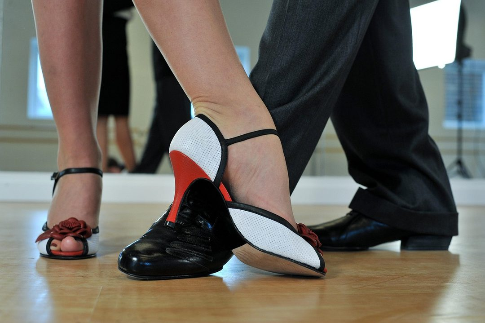
«Ты слишком много хочешь» значит «я столько дать не могу». Планку не снижаем.
Лучшая инвестиция в 25 — сон, зубы и терапия. Крипта подождёт. А вы куда вкладываетесь?
«Я не умею выражать чувства» — не особенность, а отмазка, чтобы не работать над собой. Знаю по опыту, у самой было.
Общий бюджет с парнем до свадьбы — плохая идея. Вы 1 — «всё общее» или 2 — «каждый сам за себя»?

Выбрать работу из-за зарплаты — нормально. Любимое дело можно оставить хобби и не выгореть. У вас как?
Девушки, которые ждут от мужчины «поступков» и сами ничего не делают, тоже бывают токсичными. Об этом молчат, а зря.
После свидания чувствуешь облегчение, что оно закончилось? Второго не будет. И «дать шанс» — не твоя обязанность.
Я не верю в дружбу с бывшим. Если дружите, значит, кто-то из вас до сих пор чего-то ждёт. Докажите обратное.
Маникюр раз в три недели — нормальный расход. Десятый лак за тысячу — уже перебор. Где ваша граница?
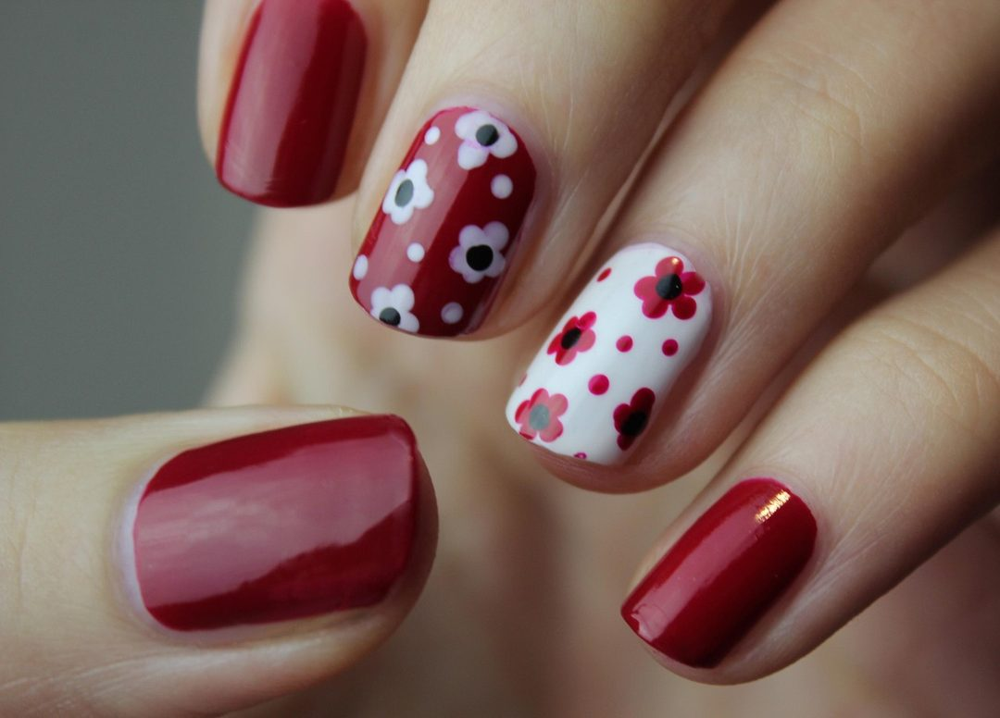
Сертификат на день рождения — ленивый подарок. Лучше честно сказать: «Не знаю, что тебе подарить, держи деньги». Я за честность.
Родители, которые говорят «мы всё для тебя делали», часто делали это ещё и для себя. Знаю, это неудобно слышать.
Отпуск с подругой не обязан быть идеальным. Если за неделю не поссорились — вы супер. Если поссорились — тоже нормально.
Когда мне говорят «ты слишком эмоциональная», хочется ответить «а ты слишком равнодушный». Почему первое считается минусом, а второе нет?
В Threads у всех идеальная жизнь. А потом я еду в метро и вижу одинаково уставшие лица. Мы все в одной лодке.
Покраситься в блонд — один из честных способов почувствовать себя новой. Брюнетки, не обижайтесь, я вас тоже люблю.
Девушка, которая не любит готовить, не плохая жена. Плохой — мужчина, который ждёт борщ после того, как она 10 часов на работе.
Не знакомит с друзьями через полгода? Либо ему неловко за тебя, либо ему есть что скрывать. Третьего варианта я не вижу.
«Я счастлива одна» — отличная фраза. Но иногда её громче всех говорят те, кому просто не с кем поделиться. Я циничная?
Совет «просто поговори с ним» не работает, если он умеет только молчать. Эмоциональную работу нельзя вешать только на нас.
Деньги от родителей на первую квартиру — не позор, а старт. Позор — потратить этот старт на ерунду.

Раньше я думала, что «подруга детства» — это навсегда. Теперь думаю: навсегда — это те, кого выбираешь каждый день.
«Я не вижу себя в браке» после трёх лет отношений — это не «я не хочу». Это «я не хочу с тобой». Простите за прямоту.
Любите чужие покупки обсуждать? Я люблю свои сумки и ваши деньги не считаю. Взаимно, пожалуйста.
«Мужчина должен зарабатывать больше» — не устарело. Устарело другое: что женщина должна за это молчать и терпеть.
Если подруга всегда выбирает парня вместо вас, вы были запасным вариантом. Или у вас не так?
Не понимаю тех, кто не отдыхает, пока «не заслужит». Отдыхают, чтобы работать, а не наоборот.

Расставание — не повод «взять себя в руки» за неделю. Хочешь лежать в пижаме месяц — лежи. Но потом всё-таки вставай.
Не хочу замуж до 30. Мама говорит, что я «упущу время». А я думаю, что упущу себя, если сделаю это зря. А вы как?
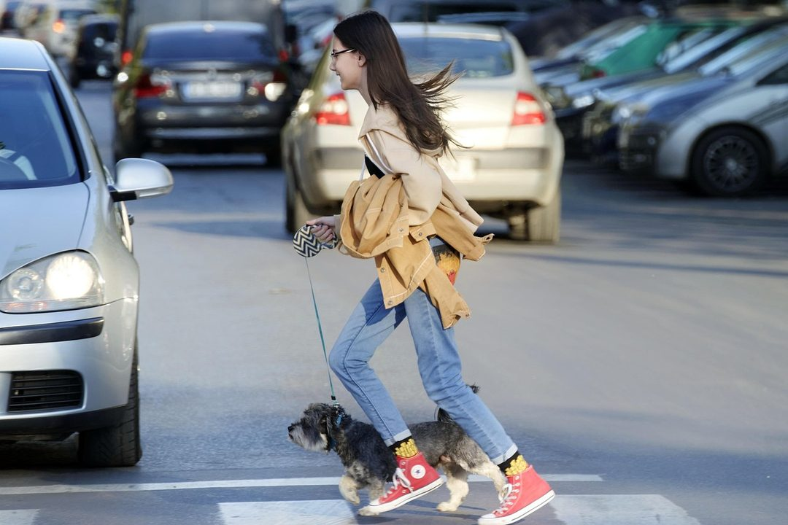
«Я такой, какой есть» от партнёра — не принятие, а отказ меняться. Не путайте.
Хорошая подруга скажет «он тебе не подходит», а не «ну ты сама решай». Вам хоть раз говорили правду в лицо?
Минимальный бюджет на красоту в месяц — 10 тысяч. Меньше — значит, вы гений или вам повезло с генами. Согласны?
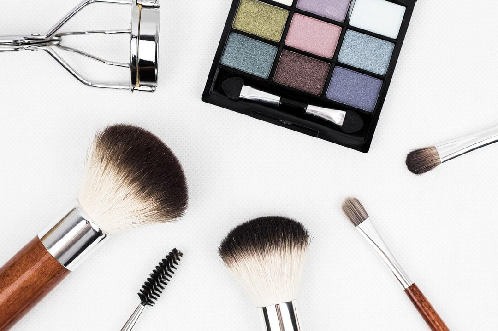
Базовый гардероб за 100 тысяч не сделает тебя стильной. Стильной делает умение сочетать вещи. Можно и из секонда.
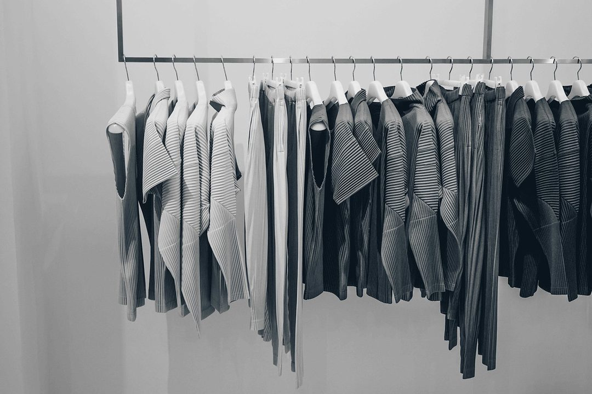
Распродажа — это не экономия. Это когда ты тратишь 5 тысяч на то, что тебе не нужно, потому что «скидка 70%».

Покупать одежду «на потом, когда похудею» — худший вид шопинга. Одежда должна подходить тебе сейчас.
Сумка за 100 тысяч — не показатель вкуса. Но и «зачем тебе такая» говорят обычно те, у кого её нет. Вы за или против?
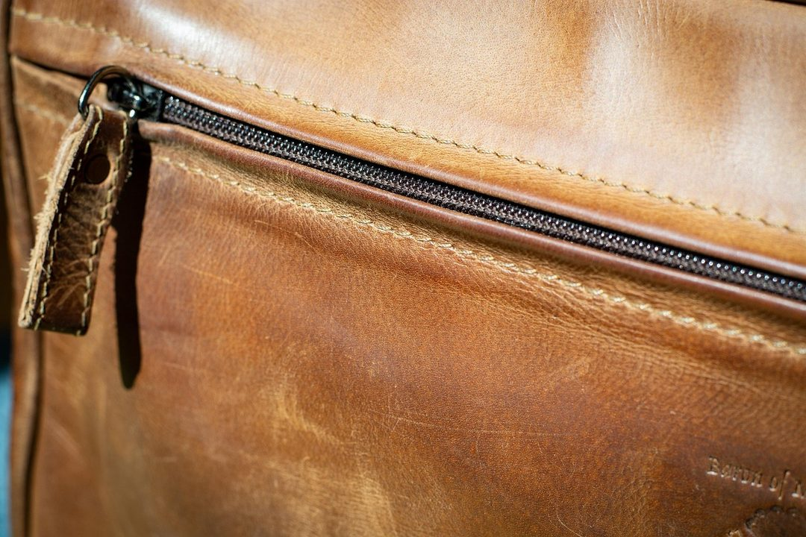
Я коплю не на «чёрный день». Я коплю на «спокойную жизнь». Подушка безопасности — это про свободу сказать «нет».
Брать кредит на отпуск — такое себе. Но брать на айфон, чтобы был «как у всех», ещё хуже. У вас бывало?
Мне 25, и я не знаю, чего хочу. И это нормально. Тем, кто «всё знал в 18», я не верю.
Парень, который любит, не пропадает на три дня. Он может быть занят, но не пропадает. Это разные вещи.
Каждую вторую девушку в 25 спрашивают «замуж не пора?». А парня хоть раз спросили «ты почему мало зарабатываешь?». Вот и ответ.
Друзья зовут в ресторан, а у тебя нет денег — сказать «не могу» нормально. Настоящие друзья поймут. А остальные пусть идут без вас.
Вчера бывший написал: «Привет, как дела?». Через полгода молчания. Я ответила: «Хорошо». Он: «Я скучаю». Я: «А я нет». Он поставил смайлик. Смайлик, Карл. Вы бы ответили?
Позвали на девичник. Потом выяснилось, что скидываться надо по 15 тысяч на «просто посидеть». Я отказалась. Теперь я «жадная». Кто права?
Парень подарил мне на годовщину набор ножей. Для кухни. Сказал: «Практично». Я улыбнулась и промолчала. А потом купила себе серёжки. Справедливо?
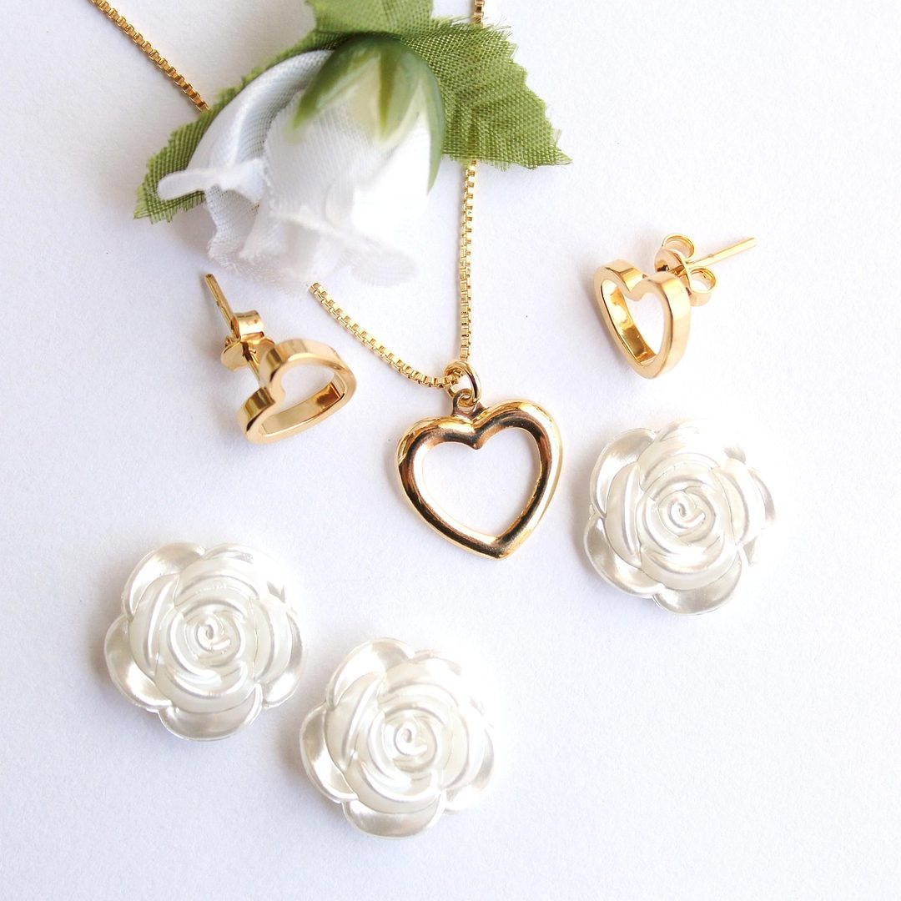
Коллега месяц говорила, что у неё нет денег. А потом выложила фото из отпуска в Турции. Я больше не одалживаю. Вы бы простили?
На кассе девушка передо мной сказала: «Карта не проходит». Я оплатила 800 рублей. Не потому что добрая, а потому что сама была на её месте. Вы бы оплатили?
Рассталась с парнем из-за того, что он не здоровался с моей мамой. Подруги: «Мелочь». Я: «Показатель». А вы бы стерпели?
Пришла на собеседование в красивом платье. Сказали: «Вы слишком нарядная для нашего офиса». Я ответила: «А у вас слишком скучный офис». Работу не дали. Не жалею. Вы бы пожалели?
Лучшая подруга позвала на свадьбу, но без «плюс один». Я два года была в отношениях. Пошла одна. Потом они с парнем расстались, а мне до сих пор неловко за тот вечер. Вы бы пошли?
Мама сказала: «С таким характером ты замуж не выйдешь». Я ответила: «Зато не выйду за такого, как папа». Тишина была долгой. Перегнула?
Купила платье за 12 тысяч. Парень сказал: «Дорого». Я ушла гулять. Вернулась — он заказал себе наушники за 15. Мы больше об этом не говорили.
На свидании парень посмотрел на меня и сказал: «Я думал, ты выше». Я встала и ушла. Не из-за роста. Из-за того, что он это сказал вслух. Вы бы ушли?
Начальница сказала мне на корпоративе: «Ты слишком много улыбаешься, это непрофессионально». Я неделю ходила серьёзная. Потом поняла, что это её комплекс, а не мой. Вам такое говорили?
Подруга заняла у меня 30 тысяч и «забыла». Через год я напомнила. Она: «Ты из-за денег портишь дружбу?» Вот тогда я и поняла, кто есть кто.
Сходила на свидание вслепую. Парень два часа говорил о криптовалюте и ни разу не спросил, как меня зовут. Потом написал: «Классно посидели!» Что у них в голове?
Вчера увидела в кафе свою бывшую подругу с моим бывшим. Они меня не заметили. Я допила кофе и ушла. Ни ревности, ни злости. Только «слава богу». Бывало так?
Парень сказал, что я «слишком много трачу на себя». Я записалась к психологу. Теперь трачу на себя ещё и там. И разговор у нас теперь другой.
Поругалась с подругой из-за того, кто сколько платит за такси. Из-за 300 рублей. Не разговариваем неделю. Смешно или нет?
В моём офисе все ходят в спортивках. А я — в каблуках. Меня называют «модель». Это не комплимент. Но мне всё равно. Вы бы подстроились?
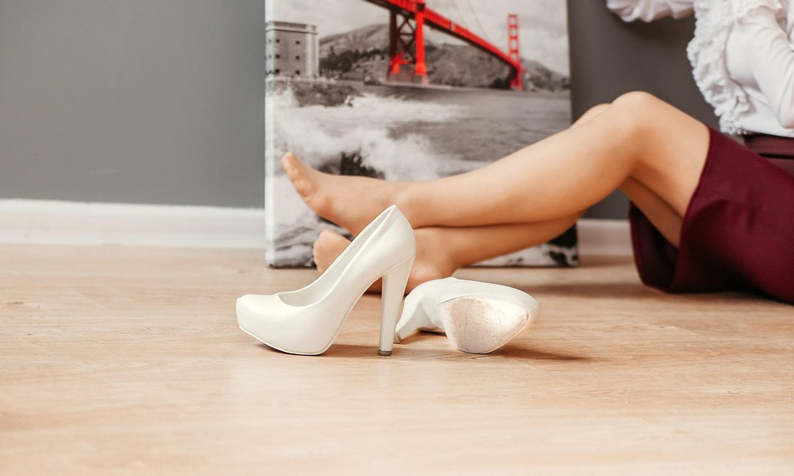
Позвонила маме поплакаться, что меня бросили. Она сказала: «А я тебе говорила». Я положила трубку. Я слишком чувствительная?
Подруга на день рождения подарила мне сертификат на психолога. Я обиделась. А потом записалась. Спасибо, подруга.
Купила билет на концерт за 9 тысяч. Потому что «один раз живём». Через неделю не хватило на аренду, и занимала у мамы. Стоило? Стоило. Повторю? Нет.
Сидели рядом в кафе: он листал телефон, она смотрела в окно. 40 минут тишины. Я подумала, что мне такое не надо. Хочу молчать вдвоём, но по-живому.
Бросила работу, когда начальник сказал: «Вам же не нужна такая зарплата, вы девушка». Через месяц нашла лучше. Он замену так и не нашёл.
Одна знакомая говорит: «Я не завидую, я радуюсь за тебя». А потом «забывает» отреагировать на любую мою новость. Я всё вижу. Вы замечали такое?
Парень спросил: «Зачем тебе столько косметики?» Я спросила: «А зачем тебе двадцать одинаковых футболок?» Больше вопросов не было.
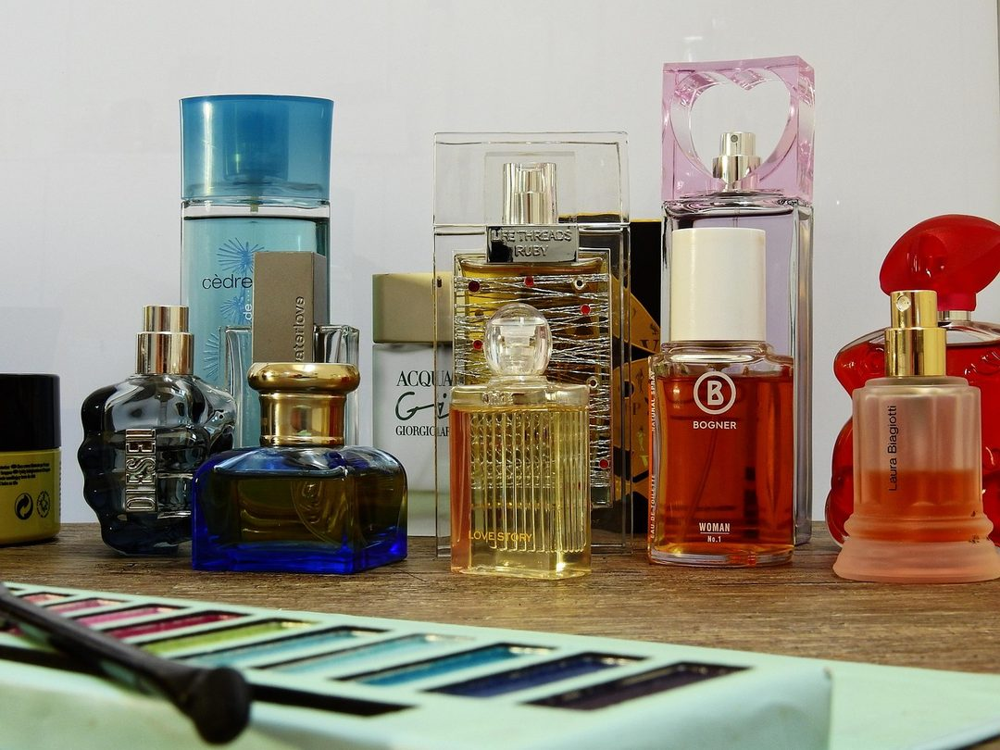
Отказалась от второго свидания. Парень написал: «Ты стерва». Я поблагодарила за комплимент. Он удалил чат. Мир стал чище на одного человека.
Посоветовала знакомой не выходить за человека, который её унижает. Она вышла. Теперь не разговаривает со мной. Правда нужна не всегда. Но я бы сказала снова.
Мама спросила: «Ты точно не хочешь детей?» Я сказала: «Точно». Она заплакала. Мне жаль, но решение я не поменяю. Как вы выдерживаете такое давление?
Fines Studio @f1nes_studio
Скажу непопулярное: малому бизнесу бот в Telegram нужнее сайта. Сайт открывают на 3 секунды и закрывают. Бот забирает контакт, отвечает в 2 ночи и дожимает заявку сам. Сайт — визитка. Бот — продавец. У кого из вас сайт реально приносит больше заявок, чем мессенджеры?

Ваш администратор теряет до 30% заявок. Не из-за лени — один человек физически не может отвечать всем сразу, ночью и в выходные. Клиент не ждёт. Он пишет следующему в выдаче. Вы считали, сколько обращений у вас висит без ответа больше 10 минут? Или лучше не знать?
Менеджер, который отвечает клиенту через 2 часа, стоит вам дороже своей зарплаты. Зарплата — 60к. А сколько сделок ушло к тем, кто ответил за 5 минут? Скорость ответа — это деньги. Согласны или «клиент подождёт»?
SMM-щик за 30к в месяц — чаще всего выброшенные деньги. Если у него цель не заявки, а «охваты и вовлечённость», вы покупаете красивые отчёты. Сколько заявок принёс ваш SMM за прошлый месяц? Цифру, а не ощущение.
ИИ заменит половину офиса, и это нормально. Не потому что люди плохие. А потому что половина офисной работы — переносить данные из одного окна в другое. Это не профессия, это копипаст. Согласны или я перегибаю?
CRM, которую никто не заполняет, — самый дорогой блокнот в компании. Вы платите за лицензии, а менеджеры ведут клиентов в WhatsApp и в голове. Проблема не в людях. Проблема в том, что CRM требует работы, а не помогает. У вас заполняют?
Владелец, который делает всё сам, — не герой, а узкое место. Каждый час, который вы отвечаете клиентам лично, вы работаете за 300 рублей вместо того, чтобы думать за 10 000. Сколько вы реально платите себе за час? Готовы честно посчитать?
Клиент: «Хочу сайт как у Apple, но за 5 тысяч». У Apple над одной страницей работает команда. Вы просите того же за стоимость пиццы на двоих. Продавать таким клиентам — тоже навык или лучше сразу отказывать?
Авито — не канал продаж, а аренда чужой аудитории. Завтра поменяют алгоритм, поднимут комиссию или заблокируют аккаунт — и ваш бизнес встанет. У вас есть собственная база клиентов или только карточки на Авито? Честно.

Маркетплейсы убивают бренды. Вы делаете товар, а покупатель запоминает не вас, а площадку. Вы — просто поставщик, у которого забирают маржу. Маркетплейс у вас основной канал? Это стратегия или зависимость?
«Дорого» клиенты говорят не потому, что дорого. А потому что вы не объяснили, за что они платят. Снижать цену — самая ленивая реакция на возражение. Вы чаще даёте скидку или объясняете ценность?
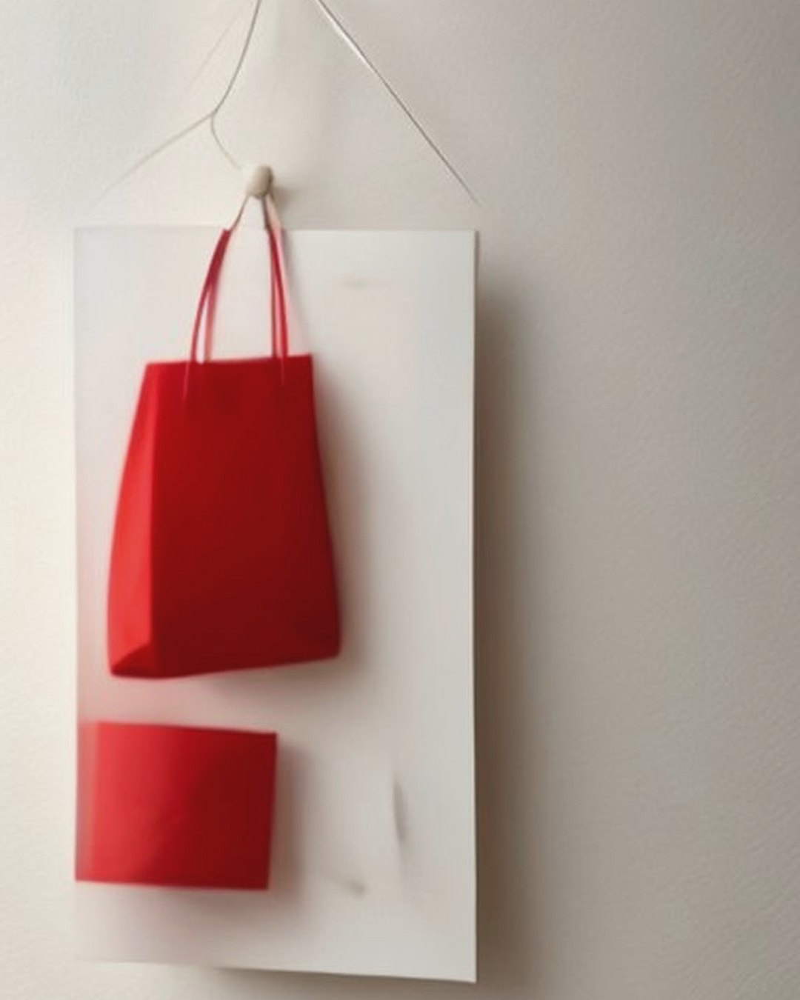
Скидка 10% «для своих» — не лояльность, а признание, что цена была завышена. Клиент это понимает. В следующий раз он попросит 15%. Вы даёте скидку по первой просьбе? Расскажите, что стало с маржой.
Чат-бот не заменит человека — он заменит тех, кто отвечает как бот. «Здравствуйте, уточню и вернусь» — это работа бота, только дороже и с обедом. Хороший менеджер освободится для сложных сделок. Плохой — нет. Вас кто устраивает?
Если вашему бизнесу нужно «личное общение» с каждым клиентом — у вас нет системы, а есть привычка. Большинство вопросов повторяются изо дня в день. Их можно закрыть за секунды. А что вы категорически не отдали бы боту?
Нанимать человека на 50к, чтобы он записывал клиентов, — странная идея в 2026 году. Бот записывает за 20 секунд, не болеет и не уходит в декрет. Человек нужен там, где нужна эмпатия. Запись на стрижку — не она. Спорим?
Сайт на конструкторе за 15к и студия за 300к дают одинаковую конверсию, если оффер слабый. Красивая упаковка пустого предложения не продаёт. На чём бы вы сэкономили: на дизайне или на оффере?
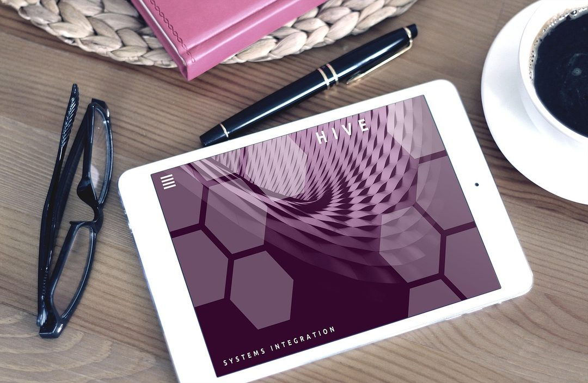
Если менеджеры не ведут сделки в CRM — увольняйте не их, а того, кто выбрал эту CRM. Система, которая раздражает людей, — плохая система, даже если «со всеми интеграциями». Согласны или менеджеры просто обязаны работать как положено?
Холодный обзвон не умер. Умер плохой холодный обзвон — по базе из 10 000 номеров с одним скриптом. А ИИ-звонок уже делает то же самое в разы дешевле. Вы бы стали разговаривать с роботом? Или бросите трубку?
Контент-завод на ИИ: 30 постов за вечер. Вопрос не «можно ли», а «заметит ли подписчик разницу, если вы отредактируете». Нужно ли помечать, что текст сделан с помощью ИИ? Или это обман аудитории?
Подписчики — тщеславная метрика. 20 000 подписчиков и 3 заявки в месяц — это не аудитория, это массовка. Какую главную метрику вы смотрите в соцсетях? И смотрите ли вообще?
Отдел продаж из 5 человек часто можно заменить отделом из 2 человек и нормальной автоматизацией. Не потому что люди не нужны, а потому что большая часть их дня — рутина. Сократили бы вы отдел, если бы оставшиеся стали получать больше?
Фрилансер за 3000 в час «дешевле» студии за 100к? Только если не считать риски. Студия — это процесс. Фрилансер — это человек. Заболел — проект встал. Кому вы доверяете критичные задачи: фрилансеру или команде?
Бизнес, который отвечает в мессенджере дольше 5 минут, уже проигрывает. Люди привыкли, что еду привозят за полчаса. Ждать ответа от вас сутки они не будут. Ваш реальный средний ответ — сколько минут?

Руководитель, который лично проверяет каждую заявку, никогда не масштабируется. Контроль — это не работа. Это страх, что без вас всё развалится. А может, и развалится. Тогда вопрос не в контроле, а в системе. Что у вас?
Рассылки в Telegram работают лучше email — и многие всё ещё платят за почтовые сервисы по привычке. Если у вас нет своего бота с базой подписчиков, вы каждый месяц арендуете чужую аудиторию. Кто ещё ведёт рассылки на почту?
Цена «от 1000 рублей» на сайте — не честность, а страх назвать реальную цифру. Клиент уходит, потому что не понимает, сколько придётся заплатить. Вы пишете цены открыто или «по запросу»? Объясните почему.
Хороший ИИ-ассистент окупается за пару месяцев. Плохой стоит как зарплата человека и не работает. Проблема не в ИИ, а в том, что его внедряют без процесса. Кто пробовал и обжёгся? Где была ошибка?
«Мы маленькие, нам автоматизация не нужна» — самая дорогая фраза малого бизнеса. Именно в малом бизнесе час владельца стоит дороже всего. Что вы автоматизировали первым? Или ещё нет?
Отзывы с «до/после» уже почти никто не читает всерьёз. Покупателя убеждает не отзыв, а то, как быстро и по делу ему ответили в мессенджере. Когда вы выбираете подрядчика, на что смотрите: на отзывы или на скорость ответа?

Лид, который не получил ответ за пять минут, остывает. Вы заплатили за рекламу — и выбросили деньги. Кто у вас отвечает на заявки в 23:00 в субботу? Или заявки спокойно ждут понедельника?
Реклама в Директе без бота или автоответа — слив бюджета. Вы платите 150 рублей за клик, а потом клиент ждёт ответа до утра. У вас есть воронка или реклама ведёт «на сайт и в никуда»?
Сотрудник без навыка работы с ИИ через пару лет будет стоить дороже, а делать меньше. Требуете ли вы от людей умения работать с нейросетями? Или пока «не надо»? Какой навык, на ваш взгляд, станет обязательным первым?
Корпоративный сайт на 50 страниц малому бизнесу не нужен. Нужны оффер, цена и кнопка «написать». Всё остальное — самолюбие владельца. Сколько страниц вашего сайта реально читают?
Бизнес-план — миф. Нужен тест на 10 живых клиентах. Если вы месяц пишете презентацию и не продали ни одному человеку, вы не предприниматель, а студент. Сколько продаж у вас было до первой презентации?

Работать «по знакомству» — не стратегия, а потолок. Пока бизнес держится на рекомендациях, он растёт ровно с той скоростью, с которой о вас вспоминают. Где ваш второй канал? Если его нет — это риск, а не «лояльная база».

Тендер «кто дешевле» убивает качество. Но «дорого = хорошо» тоже не работает. Платить стоит за результат, который можно проверить. Как вы проверяете подрядчика до оплаты?

Сотрудник, которого заменил бот, — не трагедия, а шанс перевести его туда, где он нужен. Трагедия — держать человека на задачах, которые бесят его самого. Вы бы уволили или переобучили?
Кнопка «Оставить заявку» без автоответа в течение минуты — красивая форма для пустоты. У вас автоответ есть? И что он говорит: «Мы свяжемся» или реально что-то полезное?
Если записаться можно только по звонку — вы теряете значительную часть молодых клиентов. Они не звонят. Они пишут. А если им не отвечают, уходят. Сколько у вас способов записаться без звонка?
Цена без обоснования — ничто. Цена с расчётом окупаемости — аргумент. «Бот за 80 000» — дорого. «Бот, который закрывает работу человека за 45 000 в месяц» — выгодно. Вы презентуете цену цифрой или смыслом?
Рынок агентств скоро изменится: клиент сам сгенерирует креатив за 5 минут. Агентствам придётся продавать не картинки, а стратегию и аналитику. Вы бы платили агентству только за стратегию?
Telegram — главный канал малого бизнеса в России. Не сайт и не почта. Именно туда клиент пишет в первую очередь. Где у вас больше всего живых диалогов с клиентами? Если не там — почему?
HR-менеджер, который вручную читает 200 резюме, — это не «человеческий подход», а неэффективность. Первичный отбор спокойно делает ИИ. Интервью и решение — человек. Согласны с таким разделением?
Документы, напоминания об оплате, счета — всё это можно автоматизировать. Но владельцы продолжают делать это руками «для контроля». Контроль чего? Собственного времени? Что из рутины вы до сих пор делаете сами?
Бот-квиз на входе приносит больше заявок, чем «позвоните нам». Люди не хотят говорить с продавцом, пока не поняли, подходит ли им предложение. Пробовали квиз-воронки? Работает или раздражает?
Дешёвый подрядчик обходится втрое дороже: переделки, нервы, потерянное время. Но клиенты всё равно выбирают самого дешёвого и потом удивляются. А у вас был дешёвый исполнитель, о котором вы не пожалели?
Если сотрудник на удалёнке работает хуже, проблема не в удалёнке, а в том, что вы не определили, что он должен делать. Нет метрик — нет контроля, в офисе или дома. Удалёнка или офис: что продуктивнее?

«ИИ пишет шаблонно» говорят те, кто ни разу не написал нормальную постановку задачи. Плохой результат — плохое ТЗ. Так же и с людьми. Вы умеете ставить задачи? Честно.
Лендинг без Telegram-кнопки в 2026-м — как визитка без телефона. Многие клиенты хотят написать, а не заполнять форму из шести полей. Сколько полей в вашей форме заявки? Сколько реально нужно?
Бесплатные консультации — худший способ привлечь клиента. Вы привлекаете тех, кто не готов платить, и тратите время, которое стоит денег. Делаете бесплатные консультации? Что они вам принесли?
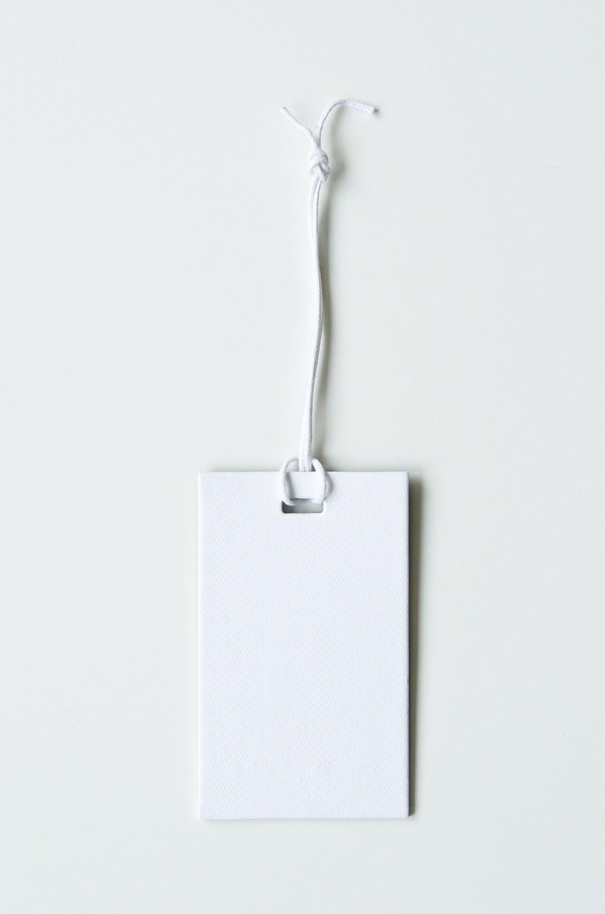
Вам не нужна «команда мечты». Нужны три человека, которые делают дело, и бот, который делает остальное. Проблема малого бизнеса не в нехватке людей, а в избытке рутины. Сколько людей в вашей команде реально незаменимы?
Сначала система — потом реклама. Иначе вы льёте воду в дырявое ведро. Вы удивитесь, сколько заявок теряется до продажи, если их никто не считает. Знаете свою конверсию из заявки в оплату? Назовите цифру.
«Мне нужен ИИ» — это не задача. Задача — «хочу, чтобы заявки обрабатывались за минуту». Пока вы не назвали боль, любая автоматизация — игрушка. С какой боли в вашем бизнесе вы бы начали?
Для многих людей до 35 звонок от компании — не сервис, а вторжение. Лучшая коммуникация — та, которую клиент выбрал сам. Вы звоните клиентам первыми? Бесит или ценят?
Бизнес на сарафанке красив ровно до того момента, когда нужно вырасти вдвое. Сарафанка не масштабируется — она просто случается. Что вы будете делать, когда сарафан перестанет работать?
Платить программисту 300к за то, что конструктор бота делает за вечер, — странный выбор. Но и жить в конструкторе, когда бизнес вырос, — ловушка. Конструктор или разработка под себя: где для вас граница?
Ваш бизнес зависит от одного ключевого сотрудника? Это не команда, это риск. Уйдёт он — уйдёт часть клиентов вместе с ним. Что вы сделали, чтобы знания не жили только в одной голове?
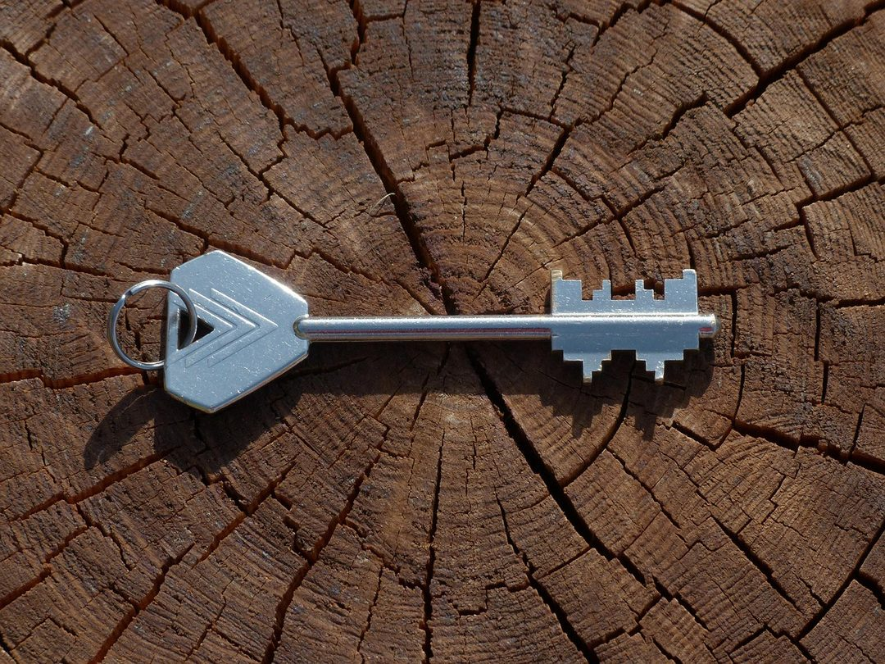
Опрос «довольны ли вы» бесполезен. Люди отвечают из вежливости. Настоящий показатель — вернулись ли они и привели ли друга. Как вы на самом деле измеряете довольство клиентов?

Реклама у блогера за 100к без трекинга — лотерея. Если вы не знаете, сколько заявок она принесла, вы не покупали рекламу, а поддерживали блогера. Как вы считаете эффективность блогеров?
Самый недооценённый сотрудник — тот, кто не спит, не просит премию и отвечает за 3 секунды. Это бот. Но вы его ещё не наняли, потому что «рано». А когда будет «не рано»?
Типичная ситуация: стоматология платит 80 000 в месяц за рекламу. Заявки приходят вечером и в выходные. Администратор видит их в понедельник. К этому моменту часть людей уже записалась к конкурентам. Кто виноват: реклама, администратор или система?
Представьте: интернет-магазин ставит бота, который отвечает на «где мой заказ?». Это самая частая тема обращений. Менеджеры наконец занимаются продажами, а не статусами. Отдали бы вы такие вопросы боту?

Типичная ситуация: владелец салона красоты сам отвечает клиентам в Директе до часу ночи. Он думает, что экономит на администраторе. На деле он теряет сон, а выручка не растёт. Что лучше: нанять человека или поставить бота?
Типичная ситуация: у отдела продаж CRM за 40 000 в год. Менеджеры ведут клиентов в Excel, потому что «так удобнее». Руководитель не видит воронку и принимает решения «по ощущениям». Кто виноват: менеджеры или руководитель?

Представьте: фитнес-клуб через бота напоминает о продлении абонемента за 3 дня до конца. Продлений становится больше, потому что люди просто забывали, а не отказывались. Вы напоминаете клиентам сами или надеетесь на их память?
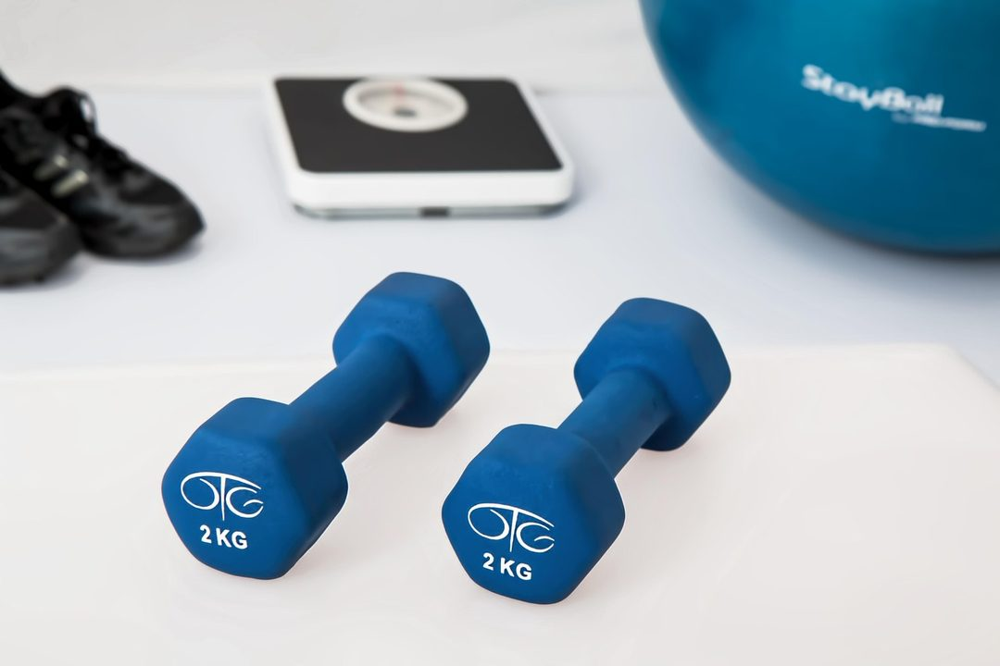
Типичная ситуация: у юрфирмы 30 обращений в неделю, из них 20 — «просто узнать цену». Юрист тратит на каждое 15 минут. Это 5 часов в неделю на тех, кто, возможно, не купит. Можно ли отдать это боту или потеряем доверие?
Типичная ситуация: ресторан платит SMM-щику за красивые сторис, а столик можно забронировать только по телефону в рабочие часы. Гость видит картинку в 22:00 и не может ничего сделать. Что важнее: контент или удобство?
Представьте: ИИ-ассистент закрывает большую часть типовых вопросов в чате магазина. Сложные уходят человеку. Человек больше не тонет в мелочах, а занимается реальными проблемами. Стали бы вы так делить? Или всё должен решать человек?
Типичная ситуация: владелец автосервиса уверен, что клиенты «ходят по сарафану», и не ведёт базу. Через год он не может сказать, кто был у него трижды, а кто пропал. Где ваша база клиентов: в голове или в системе?
Типичная ситуация: агентство недвижимости получает 100 заявок в месяц, закрывает 5. Руководитель говорит: «лиды плохие». Но никто не смотрит, сколько заявок остались без ответа сутки. Лиды плохие или обработка?
Представьте: бот за минуту собирает у клиента имя, задачу и бюджет и передаёт менеджеру готовую карточку. Менеджер звонит уже подготовленным и не тратит 15 минут на выяснение очевидного. Нужен вам такой «секретарь»?
Типичная ситуация: мастер по ремонту платит за продвижение на Авито, а в рабочее время не может брать трубку — он на объекте. Каждый пропущенный звонок — это уехавший к другому клиент. Можно ли ловить такого клиента ботом, пока вы заняты?
Типичная ситуация: онлайн-школа тратит 200 000 на трафик, а заявки вручную раскидывает по менеджерам в Excel. Один менеджер получает больше всех лидов, остальные скучают. Как у вас распределяются заявки: честно или «кому повезёт»?
Представьте: вы уходите в отпуск на 2 недели. Бизнес продолжает принимать заявки, отвечать на вопросы и записывать клиентов. У вас так? Или отпуск — это ноутбук на пляже?
Типичная ситуация: клиент просит «сделать бота, чтобы всё само». Что значит «всё» — не знает. Первые две недели уходят на то, чтобы выяснить, чего он хочет. Кто виноват: клиент или исполнитель, который вовремя не задал вопросы?

Типичная ситуация: владелец кофейни выкладывает рилсы, собирает 200 000 просмотров, а новых гостей — четверо за месяц. Рилсы смотрят люди из других городов, до кофейни они не дойдут. Какие метрики вы смотрите: охваты или кассу?
Представьте: менеджер уходит из компании и забирает с собой всю клиентскую базу в телефоне. Это не вина менеджера — это вина владельца, который не завёл CRM. Кто из вас уже терял базу таким образом?

Типичная ситуация: клиент пишет в 23:40 «сколько стоит доставка?». Ответ приходит в 10:15. В 23:41 он уже заказал у конкурента, у которого работает автоответ. Можно ли оправдать задержку фразой «ночью люди спят»?
Типичная ситуация: компания внедрила ИИ-ассистента, а сотрудники его саботируют: «он ошибается». Ошибается. Но, возможно, не чаще, чем уставший менеджер в пятницу вечером. Кто допускает больше ошибок: человек или ИИ?
Представьте: вы назвали клиенту цену, он ответил «подумаю». Через неделю ему никто не написал. Большинство сделок закрывается не с первого касания, а бизнесы останавливаются на первом. Сколько касаний делаете вы?
Типичная ситуация: владелец интернет-магазина одежды ведёт 300 заказов в месяц в Google-таблице. Когда заказов станет 600, он наймёт ещё человека вместо того, чтобы подключить автоматизацию. Что дешевле?
Типичная ситуация: у клиники три администратора, и все трое отвечают на одни и те же вопросы про цены. Один бот закрыл бы большую часть этих вопросов. Сократили бы двоих или перевели на другие задачи?
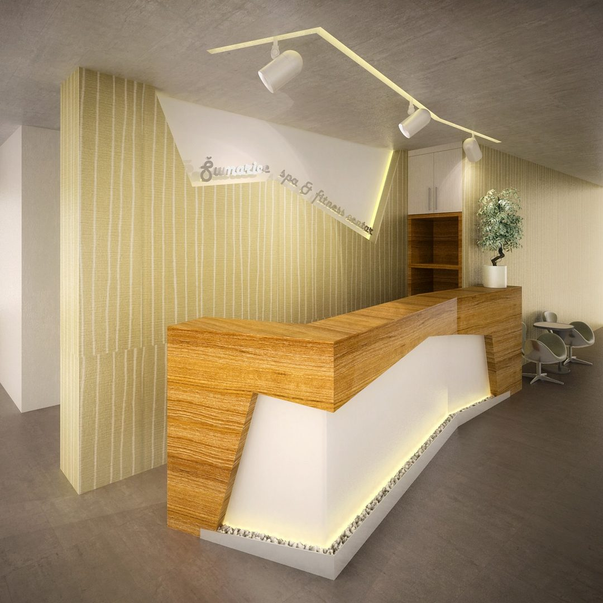
Представьте: вам пишут 50 заявок в день, у вас 2 менеджера, и каждый качественно обработает 15. Остальные 20 уходят в никуда. Это почти половина вашего рекламного бюджета. Увеличить штат или поставить фильтр?
Типичная ситуация: владелец заказал ИИ-ролики с аватаром-ведущим, а клиенты пишут «это же нейросеть». И всё равно покупают. Потому что им важно, что сказано, а не кто сказал. Вам важно знать, что контент сделан ИИ?
Типичная ситуация: предприниматель хочет «приложение как у Яндекса» с бюджетом 100 000 рублей и сроком в месяц. Он не злой — он просто не знает, сколько это стоит. Как объяснять такому клиенту реальность без обид?
Бот не берёт отпуск, не болеет и не просит прибавку. Но и не извиняется за ошибки. Что вам нужнее?
Если клиент ждёт ответа больше часа — вы ему не нужны. Спорно?
Хаос в CRM — это хаос в голове руководителя. Больно, да?
Сайт без бота — магазин без продавца. Согласны?
Лучший менеджер — тот, кто не тратит время на «сколько стоит». Это можно отдать боту?
Автоматизируйте то, что бесит. Оставьте людям то, что они умеют лучше всего. Что бесит вас?
«Рано автоматизировать» говорят до того, как потеряют первого клиента. Было у вас так?
Дешёвый SMM — это дорогие нервы. Кто пробовал?
Не умеете делегировать — не умеете масштабироваться. Всё остальное — оправдания. Жёстко?
ИИ не заберёт вашу работу. Её заберёт коллега, который с ним дружит. Верите?

Нельзя «чуть-чуть» автоматизировать. Либо процесс есть, либо его нет. Согласны?
Скидка — не маркетинг, а признание поражения. Вы за или против?
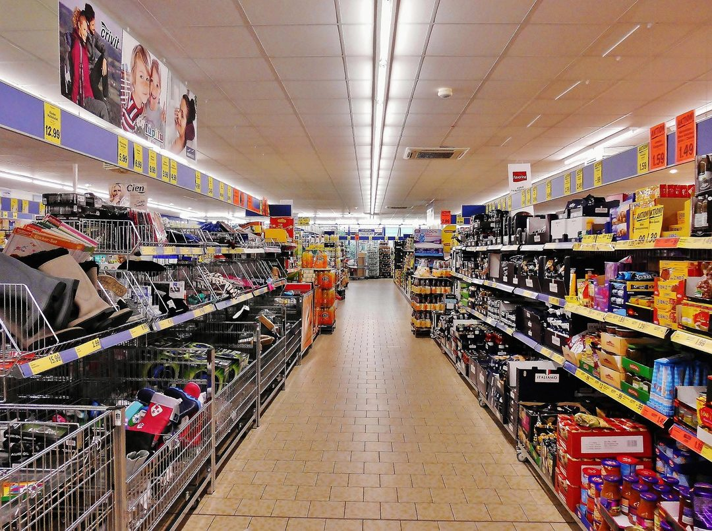
Не знаете, сколько стоит привлечение клиента, — не знаете, сколько можно тратить на рекламу. Знаете свою цифру?
Клиенту всё равно, как вы устроены внутри. Ему важно, чтобы ему ответили. Или нет?
«Приложение как у Яндекса за 100 тысяч» — это не бюджет, это мечта. Кто сталкивался с такими запросами?
Личный @yury.rude
Скажу непопулярное: через 3 года джун, который умеет только гуглить и копировать код, будет не нужен. Нужен будет тот, кто понимает, что код делает и зачем. Как думаешь, джунам пора переучиваться уже сейчас?

Скажу непопулярное: «ИИ это хайп» говорят те, кто пробовал один раз бесплатную версию год назад. Потом удивляются, что у коллеги отчёт готов за 20 минут. Ты реально пользуешься ИИ каждый день или просто имеешь мнение?
Скажу непопулярное: университет учит не профессии, а умению сидеть и терпеть. Диплом — это пропуск в HR-фильтр, не знания. Если бы диплом не требовали, ты бы пошёл учиться?
Скажу непопулярное: офис нужен не для работы, а чтобы начальник видел, что ты «работаешь». Результат от этого не растёт. Удалёнка за те же деньги или офис за +20%. Что берёшь?
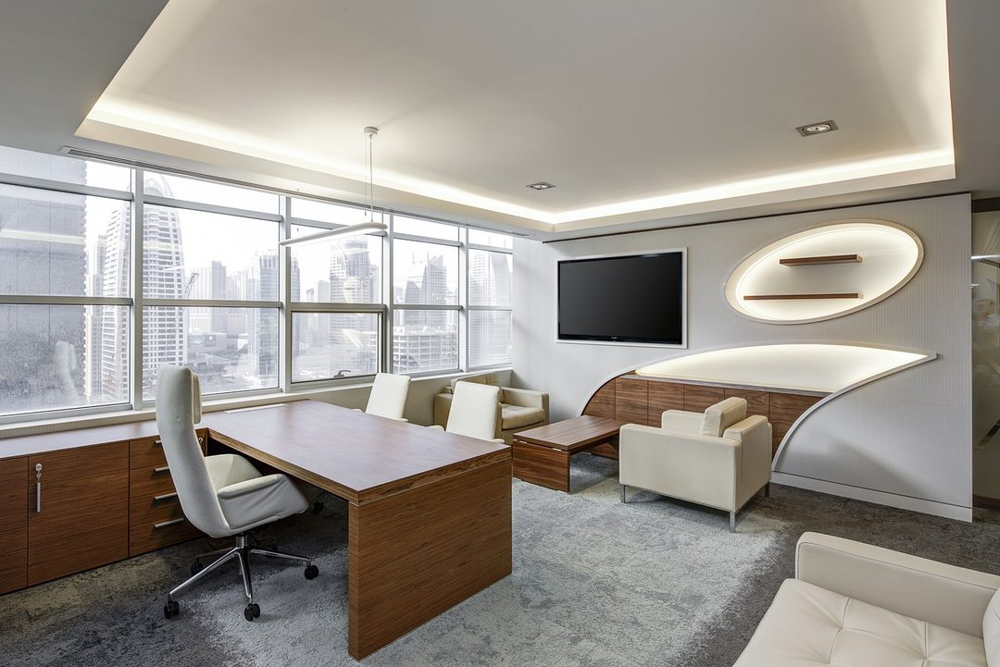
Скажу непопулярное: большинство «продуктивных» людей просто красиво оформляют свою занятость. Нотион на 40 страниц ≠ результат. Сколько у тебя систем планирования и сколько реально сделанных дел за неделю?
Скажу непопулярное: Claude пишет текст лучше ChatGPT, а ChatGPT удобнее в быту. Все, кто кричит «один лучше всех», просто не гоняют обе модели на своих задачах. Чем пользуешься ты и почему?
Скажу непопулярное: в 20–25 лет копить на «подушку» важнее, чем инвестировать. Инвестировать 5 тысяч в месяц — это не стратегия, это самоуспокоение. В этом возрасте надо растить доход, а не проценты. Согласен?

Скажу непопулярное: фриланс — не свобода, а работа на 30 начальников одновременно. Свобода начинается, когда ты можешь отказаться от клиента. Ты можешь отказаться от клиента прямо сейчас?
Скажу непопулярное: «работа мечты» — это маркетинг, чтобы ты терпел низкую зарплату ради «миссии». Мечта — это хорошие деньги и нормальные люди рядом. Отказался бы от «миссии» ради +50% к зарплате?
Скажу непопулярное: 90% промпт-инженеров — это люди, которые научились нормально формулировать мысль. Не профессия, а навык. Курс по промптам за 30 тысяч стоит своих денег?
Скажу непопулярное: чат-бот для бизнеса за 500 тысяч в большинстве случаев не нужен. Хватает бота за 30 тысяч, который отвечает на 10 одинаковых вопросов. Как думаешь, разработчики завышают цены?
Скажу непопулярное: курсы по нейросетям часто продают те, кто сам на нейросетях не заработал. Проверяй: есть ли у автора реальные проекты, а не только скриншоты. Покупал такие курсы? Не жалеешь?
Скажу непопулярное: «найди своё призвание» — вредный совет для 20-летних. Навык и деньги сначала, призвание потом. Оно приходит от умения, а не наоборот. Ты нашёл призвание до того, как стал в чём-то хорош?
Скажу непопулярное: 8-часовой рабочий день — это пережиток фабрик. Интеллектуальной работы у нормального человека выходит часа 4–5. Сколько часов в день ты реально работаешь, а не сидишь на работе?
Скажу непопулярное: ИИ не заберёт у тебя работу. Её заберёт коллега, который освоил ИИ раньше тебя. И это уже происходит. Ты уже внедрил ИИ в работу или всё ещё присматриваешься?
Скажу непопулярное: резюме мертво. Решает портфолио и то, что ты умеешь показать за 5 минут. Мне ни разу не понадобилось резюме, чтобы получить клиента. А тебе когда в последний раз его вообще читали?
Скажу непопулярное: большинство стартапов на «ИИ-обёртках» — это ChatGPT с красивой кнопкой. И это нормально, если решает задачу. Плохо, когда обещают «революцию». Обёртка — это бизнес или временный трюк?
Скажу непопулярное: нетворкинг переоценён. Рабочий контакт — тот, кому ты уже помог, а не тот, с кем выпил кофе. Визитки и чаты по интересам — шум. Кто последним привёл тебе клиента: знакомый или случайный чат?
Скажу непопулярное: в 22 года можно не знать, чем хочешь заниматься всю жизнь. И вообще никто не знает. Трать год на 5 разных попыток, а не на размышления. Сколько попыток у тебя уже было?
Скажу непопулярное: бесплатные нейросети дают 70% результата платных. Остальные 30% нужны тем, кто на этом зарабатывает. Если ты просто «поболтать», платная подписка — блажь. Ты платишь за нейросети? Окупается?
Скажу непопулярное: «пассивный доход» в 90% случаев — это очень активная работа с отложенной оплатой. По-настоящему пассивный — это депозит. И он смешной. Встречал реальный пассивный доход, кроме процентов?
Скажу непопулярное: кому-то реально лучше быть наёмным сотрудником. И это не слабость. Не каждый должен быть «предпринимателем». Стабильность — тоже выбор. Ты бы ушёл с зарплаты в свободное плавание прямо сейчас?
Скажу непопулярное: программирование — это не про языки, а про умение разбить задачу на части. ИИ уже пишет код. А вот задачу правильно поставить он пока не умеет. Какой навык важнее для разработчика?
Скажу непопулярное: 90% «горящих» дедлайнов горят из-за плохой постановки задачи, а не из-за лени исполнителя. Ты сам когда-нибудь ставил себе внятное ТЗ?
Скажу непопулярное: мотивация — миф. Работают те, у кого есть привычка и система. Ждать вдохновения — это способ ничего не делать красиво. Ты работаешь по настроению или по расписанию?
Скажу непопулярное: ChatGPT галлюцинирует, но люди тоже. Просто люди говорят это увереннее. Проверять надо всех, не только нейросеть. Ты проверяешь ответы ИИ или принимаешь на веру?
Скажу непопулярное: большинство «личных брендов» — пустая оболочка без продукта. Сначала сделай вещь, за которую платят, потом рассказывай про себя. У тебя сначала продукт или сначала аккаунт?
Скажу непопулярное: пять лет на первой работе за маленькую зарплату — это не «опыт», а потерянное время. Год-два, потом либо растёшь, либо уходишь. Сколько ты сидишь на текущем месте и растёшь ли?
Скажу непопулярное: самый дорогой навык ближайших лет — не код, а умение чётко объяснить, что нужно. ИИ делает то, что ты просишь. Если не знаешь, чего хочешь, получишь мусор. Согласен?
Скажу непопулярное: клиенты платят не за результат, а за отсутствие головной боли. Если ты берёшь хлопоты на себя, можно брать в два раза дороже. Ты продаёшь результат или спокойствие?
Скажу непопулярное: книги по саморазвитию читают, чтобы чувствовать, что развиваешься. Не чтобы развиваться. Одна применённая идея лучше 30 прочитанных. Сколько идей из последней книги ты внедрил?
Скажу непопулярное: ИИ-агенты пока сырые. Кто обещает «заменить отдел» одним агентом — не верь. Помощник — да, замена — пока нет. Видел агента, который реально заменил человека?
Скажу непопулярное: «много работать» и «много зарабатывать» — разные вещи. Иногда обратно пропорциональные. Самые высокие ставки у тех, кто делает меньше, но точнее. Ты получаешь за время или за результат?
Скажу непопулярное: вузовские оценки никто не спрашивает после первого года работы. Учи то, что пригодится, а не то, что поставят в зачётку. Какой предмет в вузе реально пригодился тебе в жизни?
Скажу непопулярное: лучшее время для старта своего дела — когда терять почти нечего. В 20 лет риск минимальный: ни ипотеки, ни детей. Ты бы рискнул сейчас или ждёшь «правильного момента»?
Скажу непопулярное: нейросеть для картинок не убьёт дизайнеров. Она убьёт тех, кто рисует по шаблону. Вкус и идея остаются людям. Дизайнеры, вы уже используете ИИ или принципиально нет?
Скажу непопулярное: лучше сделать плохо и выпустить, чем идеально и никогда. Мои первые боты были ужасны. Клиенты всё равно платили. Ты что-нибудь откладываешь, потому что «ещё не готово»?
Скажу непопулярное: ChatGPT — лучший репетитор, но только для тех, кто уже умеет учиться сам. Ленивому он просто даст готовые ответы и ничему не научит. Учишься с ИИ или списываешь?
Скажу непопулярное: не надо делегировать то, что сам ни разу не делал. Иначе не отличишь хорошую работу от плохой. Ты делегируешь то, что сам не пробовал?
Скажу непопулярное: подработки не делают тебя «предпринимателем». Они делают тебя усталым. Не всякая подработка ведёт к бизнесу. Ты подрабатываешь ради денег или ради роста?
Скажу непопулярное: нейросети не сделают тебя умнее. Умного — быстрее, а глупого — увереннее. Усилитель, а не замена мозга. Замечаешь за собой, что стал меньше думать?
Скажу непопулярное: бизнес-образование за миллион — это покупка связей, не знаний. Знания лежат в открытом доступе. Связи — нет. Связи реально стоят таких денег?
Скажу непопулярное: большинство людей не хотят свободы, они хотят предсказуемости. И это нормальный выбор, просто признай его. Ты бы выбрал нестабильный, но свободный график?
Скажу непопулярное: фриланс не умирает, он просто стал честнее. Платят за результат, а не за диплом. Лёгких заказов нет, зато порог входа ниже. Сегодня начать фрилансить легче или труднее, чем раньше?
Скажу непопулярное: отзывы на курсах чаще заказные, чем настоящие. Смотри на конкретные кейсы с цифрами и ссылками, а не на «Спасибо, вы изменили мою жизнь». Ты проверяешь автора перед покупкой?
Скажу непопулярное: Gemini недооценён. Для больших документов и файлов он часто лучше. Но все продолжают спорить про ChatGPT и Claude. Кто-нибудь использует Gemini всерьёз?
Скажу непопулярное: «выгорание» у многих — это нелюбимая работа плюс отсутствие отдыха. Выход не в йоге по вторникам, а в смене условий. Ты устал от работы вообще или от конкретной работы?
Скажу непопулярное: в 25 не обязательно быть успешным. Но желательно знать, что у тебя получается лучше других. Это важнее любого дохода. Знаешь, в чём ты хорош?
Скажу непопулярное: чаты с «инсайдами» про заработок на нейросетях — чаще всего реклама чужих курсов. Реальные схемы в открытый доступ не выкладывают. В таких чатах ты хоть раз нашёл что-то полезное?
Скажу непопулярное: не иди в IT только из-за зарплат. Через год нелюбовь к профессии съест любые деньги. Лучше быть сильным в том, что нравится. Ты в IT по любви или по деньгам?
Скажу непопулярное: подписки на зарубежные сервисы — не роскошь, а инструмент. Если экономит час в день, окупается за неделю. Считай не цену подписки, а цену своего времени. Сколько ты платишь за подписки в месяц?
Скажу непопулярное: пока одни спорят про «этику ИИ», другие уже автоматизируют свою работу. Дискуссии важны, но не вместо дела. Ты спорщик или практик в теме ИИ?
Скажу непопулярное: «учись, пока молодой» советуют те, кто сам перестал учиться в 30. Учиться надо всю жизнь, и особенно после вуза. Чему ты научился за последние полгода?
Скажу непопулярное: хороший специалист без продаж живёт хуже посредственного с продажами. Навык продавать важнее навыка делать. Ты умеешь продавать себя?
Скажу непопулярное: одна ниша и один продукт лучше, чем «делаю всё для всех». Клиенты платят за узкую экспертизу. У тебя есть чёткая специализация?
Скажу непопулярное: «вайбкодинг» работает до первой серьёзной ошибки. Дальше нужен человек, который понимает код. ИИ ускоряет, но не заменяет понимание. Ты бы запустил в бой то, что не понимаешь?
Скажу непопулярное: «пока не будет идеальной идеи, не стартую» — лучший способ не стартовать никогда. Идея ничего не стоит. Стоит то, как ты ею распорядился. Какую идею ты держишь «в столе»?
Скажу непопулярное: если твой день расписан по минутам, ты не продуктивен, а несвободен. Гибкость ценнее тайм-менеджмента. Живёшь по строгому графику или без?
Скажу непопулярное: ChatGPT пишет «никак» — гладко, но без характера. ИИ-текст узнаю за три предложения. Люди читают живое и честное. Ты замечаешь ИИ-тексты в ленте?
Скажу непопулярное: многие предприниматели любят не бизнес, а идею, что он у них есть. Проверь себя: ты любишь процесс или ярлык «основатель»?
Неделю делал всё через ChatGPT: письма, планы, даже выбор еды. Экономия времени — около часа в день. Но к пятнице я разучился формулировать мысли без подсказки. Вывод: инструмент, а не костыль. Ты замечал похожее?
Проверил на себе: месяц писал ответы клиентам только через Claude. Клиенты не заметили. Мне стало скучно — все ответы стали одинаково вежливыми. Вернул свой голос в 70% сообщений. Конверсия не упала. Что-то в этом есть?
Запустил три аккаунта в Threads как эксперимент. За первую неделю лучше всех пошёл тот, где я просто писал как есть. Самый «оптимизированный» аккаунт отстал. Как думаешь, почему живое работает лучше?
Первый бот для бизнеса занял у меня 3 недели и принёс 12 тысяч рублей. Сейчас похожий делаю за 3 дня. Не потому что стал гением, а потому что перестал придумывать с нуля и начал собирать из готовых кусков. У тебя так же было с первым проектом?
Перепродаю подписки на зарубежные сервисы. Заработок скромный, но научил главному: люди платят за удобство, даже если можно сделать самому. Из 10 клиентов 8 приходят по рекомендации. Почему удобство продаётся лучше цены?
Пробовал вставать в 5 утра ради продуктивности. Через две недели заметил: работаю хуже и сдуваюсь к вечеру. Мой режим — работать с 11 до 19 и никому не объяснять почему. А у тебя какой режим реально работает?

Я не бросал вуз. Учусь и параллельно работаю. Понял одно: диплом нужен как страховка, а не как цель. Если бы вуз не требовал посещаемости, ты бы ходил?
Попросил нейросеть составить мне бизнес-план. Получил 12 страниц красивой воды. Потом спросил: «Что из этого проверить за выходные?» Получил 3 пункта — и два сработали. Главное — задавать правильные вопросы. Как ты общаешься с ИИ?
Один клиент попросил бота «как у конкурентов». Я сделал проще и дешевле. Он остался доволен, а я потерял часть возможного чека. Не жалею: этот клиент привёл ещё двоих. Ты бы снизил цену ради повторных заказов?
Отключил на неделю все уведомления в телефоне. Оказалось, 60% из них вообще не требовали реакции. Продуктивность выросла, тревога упала. Кто-нибудь жил так дольше недели?
Пробую каждую новую нейросеть на себе. Из последних десяти в работе остались две. Остальные — красивая обёртка вокруг тех же моделей. Сколько нейросетей у тебя в реальном использовании?
Раньше думал, что нужно работать по 12 часов, чтобы чего-то добиться. Сейчас 6 часов, и результат тот же. Просто убрал всё лишнее. Ты бы попробовал сократить рабочий день вдвое?
Мой первый клиент нашёл меня в чате про ботов. Я просто бесплатно ответил на его вопрос. Через неделю он заказал проект. Это лучше любой рекламы. Ты помогаешь людям бесплатно?
Потратил 20 тысяч на курс по маркетингу. Применил из него две вещи. Потеря — 20 тысяч. Приобретение — понимание, что курсы не заменяют практику. Ты тратился на курсы? Что реально пригодилось?
Месяц решал бытовые вопросы через ИИ: рецепты, поездки, письма в банк. Экономия заметная, но пару раз ИИ выдал неправду, и я чуть не пошёл по ложному маршруту. Проверка фактов осталась за мной. Ты доверяешь ИИ в быту?
Сделал себе ассистента, который разбирает почту и пишет черновики ответов. Экономит примерно 40 минут в день. Черновики приходится править, но начинать с нуля уже не надо. Хотел бы такого помощника?
Когда начал брать предоплату 50%, пропали клиенты, которые «просто спрашивали». Заказов стало меньше, но все оплачиваются. Ты берёшь предоплату?
Месяц не смотрел короткие видео. Первые три дня ломало, потом в голове стало тихо. Написал в два раза больше постов и закончил два проекта. Попробуешь неделю без рилсов?
Каждый день работаю с VPN и платёжными обходами. Раздражает, но стало частью процесса. У меня 3 запасных способа оплаты, потому что один обязательно отвалится. Сколько у тебя запасных способов оплаты зарубежных сервисов?
Однажды потерял клиента, потому что не ответил в течение дня. «Позже» оказалось дороже любых извинений. Теперь отвечаю в течение часа. Как быстро отвечаешь клиентам ты?
Полгода работал из кофеен. Вывод: хорошо для творческих задач, плохо для сложных. Дома мозг работает глубже, чем в шумном месте. Где тебе лучше всего работается?
Попросил нейросеть написать мой пост. Вышло гладко и слишком вежливо. Я переписал половину своими словами, и пост зашёл заметно лучше. ИИ — отличный черновик, плохой автор. Согласен?
Мой самый дорогой урок: сделал бота без чёткого ТЗ и переделывал три раза. Теперь без письменного ТЗ не начинаю. Потерянное время дороже любого клиента. Ты начинаешь работу без ТЗ?
Первые деньги на своём я заработал в 19: настроил человеку бота за 5 тысяч. Сумма смешная, но ощущение, что за твой навык платят, остаётся надолго. Помнишь первые деньги не с зарплаты?

Тестировал голосовой режим ChatGPT на прогулках. Удобно для идей, бесполезно для точных задач. Идею надиктовал за 10 минут, потом полчаса разбирал мусор. Ты пробовал общаться с ИИ голосом?
Нейросеть не отберёт работу. Отберёт отговорки. Согласен?
Диплом открывает дверь. Дальше нужны ноги. Ты с этим согласен?
Совет «просто начни» бесплатен, потому что ничего не стоит. Какой совет тебе реально помог?
Занятость — не результат. Как ты отличаешь одно от другого?
Лучший промпт — ясная голова. Правда или нет?
Клиент всегда прав — пока платит. Или всё-таки не всегда?
Если не можешь объяснить задачу ИИ, ты не понимаешь задачу. Так?
Фриланс учит двум вещам: считать деньги и слышать «нет». Какая из них даётся тебе тяжелее?
Лень — это чаще всего неправильно поставленная задача. Спорим?
Умный человек с ИИ — команда. Глупый с ИИ — шум. Согласен?
Чем больше инструментов, тем меньше результата. Сколько у тебя приложений для задач?
Продавать — тоже работа. Не стыдись её. Ты стыдишься продавать?
Лучшая инвестиция в 22 года — навык, за который платят. Какой у тебя?
Хайп проходит. Автоматизация остаётся. Ставишь на хайп или на автоматизацию?
Отдых — тоже часть работы. Просто за него никто не платит. Ты отдыхаешь без чувства вины?
The Rude Store @rude_store_official
Непопулярное мнение: Jordan 1 переоценены. Отличная модель, но половина любви к ней — маркетинг и привычка. Выпусти их сегодня без истории — кто бы стоял в очереди? Вы за или против?
New Balance 550 — кроссовки для тех, у кого нет вкуса? Или чистая классика, которую не надо объяснять? Мы видим и то и другое. А вы в каком лагере?
Белые кроссовки — самое скучное в гардеробе. И самое надёжное. Что выберете на каждый день: безопасную скуку или риск с цветом?
Yeezy после скандала: носить или нет? Одни говорят: отделяйте дизайн от автора. Другие: деньги всё равно идут ему. Где для вас граница?
Nike скатился. Или мы просто выросли, и обычным ретро-релизом нас уже не удивить? Назовите последнюю модель Nike, которая реально зацепила.
Платить 30 000 ₽ за кроссовки — глупость? Для одних это три месяца накоплений, для других обычный чек. Какая цифра для вас — потолок, выше которого вы не заплатите?
Носить реплики — нормально? Мы продаём только оригиналы, позиция понятна. Но спор живой: бюджет, статус, этика. Какой аргумент в пользу реплик кажется вам самым сильным, а какой самым слабым?
Adidas Samba теперь на каждом втором. Это ещё тренд или уже униформа? Когда модель надоедает: когда её носят все или когда вы сами видите её в сотый раз?
Кроссовки после 30 — кринж? По-нашему, нет. Но в 40 и ярких Dunk всё равно кто-нибудь спросит: «Ты чего?» Где ваш возрастной предел?
Мужчина в кроссовках на свадьбе — стиль или неуважение? Если костюм сидит, а пара чистая, мы за. А что скажут невеста и тёща?
Gorpcore — это когда ты в городе, но выглядишь так, будто сейчас уйдёшь в горы. Salomon и ASICS на асфальте — стиль или косплей? Вы хоть раз ходили в них в поход?
Чёрная пятница: скидки или обманка? Магазины сначала поднимают цену, потом «снижают». Вы реально находили выгодную пару или покупали эмоцию?
Кроссовки зимой — смелость или глупость? Замша, сетка и белая подошва против слякоти. Кто ходит так всю зиму и не жалеет?
Кроссы под костюм — тренд, который пережил себя? Или классика с белыми Stan Smith всё ещё работает? Ваш вердикт.
Ресейл убил кроссовочную культуру. Раньше ты занимал очередь, теперь платишь наценку. Это рынок или грабёж?
Коллабы превратились в пустое слово. Логотип двух брендов на пятке — и цена выше. Назовите коллаб, который реально оправдал ценник.
Скажу непопулярное: Dunk Low давно не про уличный вайб. Их покупают, потому что «надо». Согласны? Или Dunk всё ещё вне конкуренции?
Air Force 1 — самые честные кроссовки. Не гонятся за трендом и не просят объяснений. И да, они скучные. Это комплимент или нет?
Что лучше: одна пара за 40 000 ₽ или четыре за 10 000 ₽? Мы бы взяли четыре разных. А вы?
Хайп закончился? Очереди короче, лимитки спокойно лежат на полках. Или хайп просто ушёл в нишу? Где вы это замечаете?
Кроссовки, в которых неудобно, но выглядят отлично: терпеть? Мы за комфорт. А сколько кругов по городу вы готовы пройти ради красивой пары?
Грязные кроссовки — стиль или неряшливость? Одни называют это «прожитая пара», другие — «помой уже». Какая сторона вам ближе?
Нужно ли носить кроссовки строго по назначению? Беговые на асфальте, баскетбольные в офис, трейловые в кафе. Это свобода или потеря смысла?
Лучшая обувь 2020-х — не Jordan и не Dunk, а Samba и Gazelle: тонкая подошва, замша, ничего лишнего. Спорный тезис? Докажите обратное.
Платить за коробку — нормально? Коллекционеры скажут: коробка — половина ценности. Остальные: это мусор, который занимает место. Кто прав?

Лимитки нужно носить, а не хранить. Пара на полке — просто дорогая картинка. Но сносишь — и ценность падает. Что бы сделали вы?
Кроссовки на платформе у мужчин — тренд или перебор? Мы считаем: если сидит, почему нет. Ваше мнение?
Мнение: Air Max 90 лучше Air Max 1. Силуэт выразительнее, вариаций больше. Где сторонники классики?
New Balance — новый Nike для тех, кто устал от Nike? Или это очередная волна моды, и через пару лет все сменят пластинку?
Salomon XT-6 — самые некрасивые кроссовки, которые все хотят. Как так вышло? И это вообще надо объяснять?
ASICS Gel-Kayano — идеальные кроссовки «как у папы». Именно за это их и любят. Вы в теме или не понимаете, в чём прикол?
Сколько пар в гардеробе — уже коллекция, а сколько — шопоголизм? Назовите свою цифру честно.
Кастомы почти всегда хуже оригинального дизайна. Идея «хочу как у всех, только другого цвета» редко заканчивается красиво. Есть примеры обратного?
Кроссовки, которые на фото выглядели огонь, а вживую разочаровали. Какая модель вас обманула?
Ретро-беговые — самый недооценённый сегмент. Puma, Reebok, Saucony — по цене близко к Jordan, а внимания почти нет. Почему так?
Кроссовки — это искусство или просто обувь для ходьбы? Если платите за дизайн, где проходит граница?
Беречь пару «для особого случая» — глупость? Особый случай не наступает, а подошва желтеет на полке. Вы носите лучшее сразу или откладываете?
Лучшие кроссовки для города: Jordan, Dunk, New Balance, Samba или что-то ещё? Одна пара на всю жизнь — какая остаётся?
Хайповые кроссовки со временем теряют в цене. Пока о них говорят — дорого. Потом это просто пара. Правило это или совпадение?
Samba, Gazelle и Campus всё чаще становятся унисексом. Это хорошо или стирает характер моделей?
Покупать кроссовки за границей дешевле — миф или правда? С доставкой, пошлиной и курсом разница не всегда очевидна. Кто реально считал?
Невидимые носки зимой с кроссовками. Мы не понимаем, но видим, что так делают. Объясните нам.
Как вы храните кроссовки: по брендам, по цветам или «куда влезло»? И у кого уже есть отдельная полка с подсветкой?
Adidas Superstar недооценены именно потому, что слишком известные. Мы перестаём замечать то, что видим каждый день. Вы замечаете?
Кроссовки на торжество: готовы надеть? С костюмом можно. При строгом дресс-коде — нет. Где вы проводите границу?
Reebok Club C — тихая классика, о которой все забыли. Почему она не в тренде? Или вы её носите?
Гонка за «первым» релизом — глупость? Перепродажа в два раза дороже, а через полгода пара лежит на полках. Вы бы ждали или брали сразу?
Мода на «уродливые» кроссовки — бунт или усталость от красоты? Chunky, dad shoes, Triple S. Где ваш предел?
Лотереи, очереди, боты — это маркетинг или честная игра? Кому реально достаются лимитки, если ты просто фанат?
В кроссовках за 20 000 ₽ можно идти по лужам? Или такую пару надо беречь? Вы побежите за зонтом?
Дешёвые кроссовки живут не меньше дорогих. Правда или нет? Расскажите, что сносили быстрее всего.
Какую модель вы бы запретили к выпуску навсегда? И какую заставили бы вернуть?
Подошва Air — один из лучших дизайнерских ходов в обуви. Но в Москве зимой она скользит как каток. Это цена за стиль?
Adidas или Nike: выбрать одно навсегда. Что берёте? И без «а как же New Balance».
Брать кроссовки «на вырост» по скидке — плохая идея. Нога размер не обманет. Есть у кого-то история, когда сработало?
Белые кроссовки и чиносы — скучно или идеально? Мы видим такие образы каждый день. Как бы вы их освежили?
Самый переоценённый релиз последних лет — какой? Назовите пару, из-за которой зря стояли в очереди.
Самая недооценённая пара последних лет — какая? Любой бренд.
Кроссовки в офисе: допустимо? У нас — да. Но на встрече с клиентом всё равно смотрят на обувь. Как у вас?
Бренды воруют идеи друг у друга. Похожие силуэты у Nike, Adidas, NB — совпадение или тренд? Кто у кого списывает?
Лучшая амортизация: Boost, Air, ZoomX или простая резина? У каждого свой ответ. Какой ваш?
Вам ближе кроссовки с историей или с технологиями будущего? Мы не можем выбрать. А вы?
Все выглядят одинаково: те же модели, те же цвета, те же образы. Где индивидуальность? Или она в деталях?
Что обиднее: наступили на новую пару или купили не тот размер? Нам кажется, второе. Вы как считаете?
Кроссовки — самовыражение или способ влиться в группу? Или и то и другое сразу?
Как проверить оригинал за минуту: 1. Швы ровные, без торчащих ниток. 2. Резкий запах клея — повод насторожиться. 3. Внутренняя бирка: шрифт, размерная сетка, коды. Не уверены — присылайте фото, глянем.
Размерные сетки у Jordan, Nike и New Balance не совпадают. Ориентируйтесь на длину стопы в сантиметрах, а не на цифру на коробке. И сверяйтесь с таблицей конкретной модели.
Не стирайте кроссовки в машинке. Клей размягчается, подошва отходит, форма уходит. Щётка, тёплая вода и мягкое средство работают лучше.
Хотите сохранить белую подошву — протирайте её сразу после носки. Чем дольше грязь лежит, тем глубже въедается. Простое правило, которое экономит и деньги, и нервы.
Замшу к зиме лучше обработать водоотталкивающим спреем. Пять минут — и пара переживёт реагенты и слякоть. Делать надо до первого выхода.
Перед покупкой лимитки сравните цену минимум в трёх местах. Разница бывает заметной. Первая цена редко лучшая.
Как понять, что кроссовки впору: примеряйте вечером, когда нога чуть отекла, и в тех носках, в которых будете ходить. Запас у пальца — около 0,5 см.
Сушить кроссовки на батарее — плохая идея. Кожа трескается, клей слабеет. Набейте бумагой и оставьте при комнатной температуре. Дольше, но пара проживёт дольше.
Покупаете по фото — просите снимок подошвы и внутренней бирки. Если продавец показывает только верх, задайте вопрос. Честный ответит сразу.
Доставка из-за рубежа обычно занимает около 2–4 недель. Нужно к дате — заказывайте с запасом и заранее уточните, что входит в цену.
«В хорошем состоянии» — это не «новая». Уточняйте, сколько раз пару носили, и просите фото подошвы. Это самый честный индикатор.
Самый быстрый апгрейд пары — новые шнурки. Плоские белые, цветные, вощёные: образ меняется за пару сотен рублей.
Не храните кроссовки годами в закрытой коробке. Подошва может желтеть и крошиться. Раз в полгода доставайте и проветривайте.
Как носить кроссы под костюм: одноцветная минималистичная пара, чистая подошва, носки в тон брюк. Тогда это выглядит как решение, а не как ошибка.
Скидка 70% на пару, которую вы не купили бы по полной цене, — не экономия. Спросите себя: надел бы я это сегодня?
Профессиональная чистка кроссовок обычно стоит от нескольких сотен до пары тысяч рублей, зависит от материала. Для хорошей пары это оправданный расход.
«Разносятся» — миф для большинства моделей. Кожа чуть поддаётся, но колодка остаётся. Если жмёт в магазине, жать будет и дальше.
Как отличить подделку Dunk: смотрите на носок, перфорацию и плотность кожи. На фейках носок часто плоский, а кожа слишком мягкая. Не панацея, но хороший первый фильтр.
Нет возврата и гарантии — красный флаг. Честный продавец оригиналов не боится проверки. Спрашивайте об этом до оплаты.
Сезонность кроссовок: зимой берите плотную кожу и подошву с протектором, летом — текстиль и сетку. Пара «на все сезоны» — компромисс, который редко радует.
Кроссовок не бывает много. Бывает мало шкафов.
Лучший способ поссориться с другом — спросить, настоящие ли у него кроссы.
Новая пара лечит всё, кроме желания следующей.
Шнурки — тоже аксессуар. Просто не все это понимают.
Если в кроссовках удобно, они уже красивые.
Чистая подошва — признак уверенности.
Нет плохой погоды, есть неподходящая замша.
Не ждите повода. Надевайте.
Не влезла в размер — не твоя пара.
Скидка 50% на ненужное — это не скидка, а трата.
Одна пара на всё — не минимализм, а лень.
Коробка от кроссовок часто живёт дольше самих кроссовок.
У каждой пары свой характер. Не каждый хозяин его замечает.
Белые кроссовки в слякоть — не глупость, а вызов.
Хайп проходит. Стиль остаётся.
GTA VI фан-аккаунт
GTA VI переоценена. Не потому что плохая. Потому что 12 лет ожидания превратили игру в религию, а религию нельзя оценивать честно. Критики 99, игроки 5. Правда где-то посередине, и обе стороны это знают.
30 FPS в 2026 году — позор. Мне плевать на «кинематографичность». Я купил консоль за 50к, чтобы играть, а не смотреть слайд-шоу с красивой водой. Если Rockstar не починит — это провал, а не «особенность».
Лусия интереснее Джейсона. Я сказал это вслух. Пусть меня заминусуют, но в паре Bonnie & Clyde всегда запоминают ту, кто решает, а не ту, кто просто едет рядом. Вы за кого?
GTA V всё ещё лучше шестёрки в одном: она ощущалась как событие, а не как обязанность. Я в 2013-м не читал отзывы. Я просто играл. Сейчас все сначала читают, потом играют. Игра тут ни при чём, мы сами изменились.
Ждать PC-версию — это не «для нищих». Это единственный нормальный способ играть без 30 FPS. Кто купил консоль ради одной игры и теперь жалуется — сам выбрал. Но и ржать над теми, кто ждёт до 2027, я тоже буду. Честно.
$3,8 млрд за первый день — это не доказательство качества. Это доказательство маркетинга и 12 лет голода. Продажи показывают, сколько людей хотели купить. Хорошая ли игра — показывает то, что они скажут через полгода.
Рейтинг критиков 99 и игроков 5 — это не баг, а диагноз индустрии. Либо критики боятся ставить Rockstar меньше, либо игроки мстят за ожидания. Скорее всего, и то, и другое. Кому вы верите больше?
Rockstar выпустила игру с багом сохранений. На 32,5 млн копий. В 2026 году это не «досадная мелочь». Это уровень, за который любую другую студию разнесли бы в клочья. Рокстару прощают, потому что она Rockstar. Это нечестно.
RDR2 всё равно лучше шестёрки. Не потому что там лошади. А потому что она была смелой: медленной, странной, неудобной. VI выглядит как игра, которая боялась кого-то разочаровать. И разочаровала всех понемногу.
Онлайн при релизе — не нужен. И хорошо, что его не было. Каждый раз, когда Rockstar делала онлайн, сингл превращался в витрину. Пусть сначала доделают историю, а потом уже ломают всё донатом.
Онлайн убьёт сюжет GTA VI, как убил GTA V. После 2013-го Rockstar не выпустила ни одного нормального DLC для одиночки. Деньги шли в онлайн. Почему с шестёркой должно быть иначе?
Вице-Сити 2002 года был лучше по ощущениям, чем современный. Тогда город был маленьким, но жил в голове. Сейчас он огромный, красивый и... знакомый. Как отпуск по фоткам из инстаграма.
Скажу непопулярное: 12 лет ожидания не стоили того. Игра хорошая. Может, отличная. Но ни одна игра не стоит 12 лет жизни, за которые я успел сменить работу, город и половину интересов.
Нет, стримеры, которые спойлерят GTA VI в эфире, — не «контент». Это испорченный опыт для тысяч людей. Если вы 12 лет ждали игру, зачем включать чужое прохождение в первую неделю? И да, вы сами пошли смотреть.
Моды на PC сделают GTA VI лучше за месяц, чем Rockstar за год. И именно поэтому они не торопятся с PC-версией: сначала надо продать консоли. Я не обвиняю. Но давайте не делать вид, что это случайность.
Задержка PC-версии — это бизнес, а не техническая проблема. Консольный эксклюзив месяцами — дополнительные миллионы копий. Те, кто ждёт ПК, просто финансируют чужую жадность своим терпением.
Графика GTA VI не вау. Она просто дорогая. Разница есть. «Вау» — когда ты останавливаешься и смотришь. «Дорого» — когда ты понимаешь, сколько это стоило, но смотреть всё равно скучно. Спорим?
Первый патч 23 ноября через четыре дня после релиза — это признание того, что игру выпустили недоделанной. Я не против патчей. Я против того, что за 12 лет «ещё доработать» всё равно осталось.
Лучшее в GTA VI — не сюжет и не карта. Это ощущение, что Rockstar всё ещё умеет делать миры, в которых хочется просто жить. Худшее — что нам снова придётся платить за то, чтобы жить в них вместе.
Леонида — лучшая карта в серии, и я не готов спорить. Grassrivers, Leonida Keys, Port Gellhorn, Mount Kalaga — это не просто регионы, а настроение. Но ностальгия по Лос-Сантосу не уйдёт никогда. Согласны?
Джейсон и Лусия — самый честный дуэт в серии. Никаких «спасём мир» и «семейных ценностей». Просто двое, которые хотят выжить вместе. И именно поэтому сюжет либо взлетит, либо сдохнет. Золотой середины нет.
Bonnie & Clyde — самый заезженный образ в криминальных историях. Rockstar выбрала безопасность после 12 лет ожидания. Хорошо исполненную, но безопасность. Мне хотелось от них безумия.
Не надо говорить «Rockstar заслужила доверие». Доверие нельзя заработать один раз. GTA V, RDR2, теперь VI — каждый раз её судят по прошлым играм, а не по текущей. Это работает, пока работает.
Консоль ради одной игры — худшая покупка года, и я куплю её снова. Потому что 12 лет — это 12 лет. Но давайте будем честными: мы купили не консоль, а право участвовать в обсуждении.
Покупать GTA VI в первый день — глупо. Первый патч уже вышел, баги сохранений есть, 30 FPS не лечится. Подождите зиму, получите нормальную версию дешевле. Но вы, конечно, всё равно уже купили.
Те, кто говорит «просто играйте и наслаждайтесь», сами не играют, а спорят. Никто не наслаждается GTA VI тихо. Все пришли доказать, что их мнение — единственно верное. Включая меня.
Миф: «Rockstar делает игры, которые ничем не заменить». Правда: шестёрка — это очень дорогая GTA V с новой картой. Лучше по технологиям, но по сути та же формула. Если вы считаете иначе, объясните чем.
Каждый, кто ругал GTA V за «глупых героев», сейчас хвалит VI за «живых». Просто потому что игра новая. Память у фанатов избирательная.
GTA VI — первая игра в серии, где я боюсь заходить в онлайн. Не из-за читеров. А потому что знаю: как только он появится, сюжет станет «подготовкой» к донату. И Rockstar это знает тоже.
Самая переоценённая часть любой GTA — пролог. Все помнят начало, а середину никто не вспомнит. И VI это не изменила. Мы так любим первые часы, что прощаем остальные двадцать.
Я не верю в 99 у критиков. Не потому что игра плохая. А потому что рецензии к такому релизу пишут за неделю, а такие миры раскрываются за месяцы. Это оценка впечатления, не игры.
Пользовательские 5/10 — это не «игроки ничего не понимают». Это вполне ожидаемый протест против 30 FPS, багов и отсутствия онлайна. Игнорировать их — значит делать вид, что проблем нет.
Rockstar не извинится за 30 FPS. И знаете почему? Потому что вы всё равно купили. 32,5 млн копий — лучший аргумент против любых жалоб. Деньги говорят громче отзывов.
Первый вопрос к любой игре в 2026: «А она на PC?» Если нет — значит, вам просто продают эксклюзивность вместо качества. GTA VI в этом смысле ничем не лучше остальных.
Игры не должны ждать 12 лет. Точка. Если студия не может уложиться в десятилетие, значит проблема не в «перфекционизме», а в управлении. Rockstar это не оправдывает, даже если результат красивый.
Мне надоело слушать «Rockstar делает искусство». Искусство не требует 3,8 млрд за первый день. Это продукт. Очень хороший, очень дорогой, но продукт. Можно любить и не врать себе.
Лучшие моменты GTA VI я нашёл не в миссиях, а в случайных поездках по Леониде. Если у вас так же — значит, сюжет не главное. А если нет — расскажите, что для вас главное.
Самое смешное в релизе GTA VI: все жалуются на 30 FPS, и все равно играют. Это и есть сила бренда. Ни один недостаток не мешает, если ты 12 лет ждал.
Лусия — не «сильная героиня». Она просто нормальный персонаж. Смешно, что в 2026 году это надо подчёркивать. Но раз уж фанаты спорят, пусть спорят про характер, а не про пол.
Если вам не понравилась GTA VI — вы не «не поняли». Вам просто не понравилось. Хватит оправдывать любую игру тем, что мы «не доросли». Иногда игра просто не попала в вас.
Если вам понравилась GTA VI — вы не «слепой фанат». Вам просто понравилось. Мне надоел этот цирк, где любое мнение сначала проверяют на лояльность.
Rockstar нужно было выпускать GTA VI сразу на PC. Не «через год», не «когда-нибудь». Потому что именно там самая громкая аудитория, мемы и моды. Консольный эксклюзив — это дым, а не стратегия.
Я не понимаю, зачем вообще нужна карта на пол-штата, если люди всё равно сидят в одном месте. Больше не значит лучше. Но Rockstar продолжает мерить успех квадратными километрами.
Вице-Сити 2002 года ощущался как приключение. Вице-Сити 2026 ощущается как работа: бегать, смотреть, собирать. Может, дело во мне? Может. Но проверьте себя честно.
Хорошо, что GTA VI вышла без онлайна. Теперь ясно, кто играет в игру, а кто играет в «сервис». После запуска онлайна всё изменится. Наслаждайтесь тишиной.
Главная проблема GTA VI — не FPS и не баги. Главная проблема — планка. Она подняла её сама себе настолько высоко, что любая игра ниже «шедевра на века» теперь считается провалом.
GTA VI не изменит индустрию. Она просто покажет, как много денег можно собрать на ожидании. И другие издатели это увидят. А значит, нас ждёт ещё больше затяжных анонсов и «скоро». Спасибо, Rockstar.
Я бы заплатил за GTA VI вдвое больше, если бы она вышла на PC без задержек. Показательно, что именно этого Rockstar не предлагает. Ей выгоднее, чтобы мы ждали.
Стримеры — враги нового релиза. Я это сказал. Первую неделю невозможно открыть ленту, чтобы не наткнуться на кадры из финала. А они ещё удивляются, почему люди злятся.
Хватит сравнивать GTA VI с GTA V. Это разные эпохи. Но вы всё равно будете. И я тоже. Потому что V — единственное, с чем можно сравнивать.
Первый патч показал: Rockstar следит за жалобами. Но следит она не за теми, кто пишет в соцсетях, а за теми, кто возвращает игру. Деньги — вот настоящий отзыв.
Тот, кто купил PS5 ради GTA VI, получил то, что хотел. Тот, кто ждал PC, получил время подумать, нужно ли ему это вообще. Кто из вас в итоге выиграл?
Мне кажется, лучшие сюжетные игры в 2026 году делают не Rockstar. Они просто самые громкие. Громкость и качество — разные вещи, и пора это признать.
Критики поставили 99 не за игру, а за 12 лет труда. Это как оценка за старательность. Мне нужна оценка за то, что я получил на экране, а не за то, что студия страдала.
Мемы про GTA VI в первую неделю были лучше самой игры. Признайтесь: вы смеялись над Леонидой больше, чем радовались ей. И это нормально.
Rockstar не торопится с онлайном, потому что это будет главная монетизация. Сначала нас кормят сюжетом, чтобы мы привыкли. Это не конспирология. Это бизнес-план, который вы уже видели.
Самый частый вопрос: «Стоит ли играть сейчас или подождать патчей?» Мой честный ответ: если вы спрашиваете — подождите. Тот, кто не может ждать, уже играет и спрашивать не будет.
GTA VI — игра, которая заставила нас вспомнить, что мы ждали не игру, а ощущение 2002 года. И нет, оно не вернётся. Никакой Rockstar это не под силу.
Не бывает «идеальной» GTA. Бывает та, которая совпала с моментом твоей жизни. Поэтому одни называют VI лучшей, а другие — пустой. Вопрос не в игре, а в том, кто вы были, когда начали ждать.
Хочу видеть, как Rockstar докажет, что 30 FPS был необходим. Потому что если через год выйдет режим 60 — это будет самая позорная правда о «технических ограничениях».
Смешно, что люди ругают GTA VI за баги, но терпели их в GTA V. Стандарты растут, это нормально. Но не надо делать вид, что раньше всё было идеально.
Фанаты, которые защищают Rockstar от любой критики, вредят ей больше, чем хейтеры. Хейтеры хотя бы подсказывают, где болит. А «всё отлично» — это путь к стагнации.
Я бы не называл VI «лучшей игрой десятилетия» только потому, что она самая дорогая. Назовём её самой ожидаемой. Это честнее. А «лучшая» подождёт, пока мы не доиграем.
Парадокс: чем больше мир GTA VI, тем меньше я в нём делаю. Первые 10 часов — открытия. Потом — маршруты. Это проблема открытых миров в целом, и Rockstar её не решила.
Игроки, ставящие 1/10 из-за FPS, не помогают никому. Но игнорировать то, что 5/10 в среднем — значит врать себе. Обе стороны правы наполовину. Вот и всё.
Те, кто купил GTA VI на консоли и теперь ждёт PC ради «нормальной версии», заплатят за неё дважды. Это не упрёк, а факт. Спрос рождает такие модели, и Rockstar это прекрасно знает.
GTA VI доказала: бюджет не равен смелости. Потратить столько денег и выпустить такую осторожную игру — это достижение. Сомнительное, но достижение.
Вопрос на засыпку: что вы выберете? А) GTA VI на консоли сейчас, 30 FPS. Б) Подождать PC и 60 FPS, но не раньше 2027. Пишите свою букву и почему.
Что бы вы сделали на месте Rockstar: выпустить онлайн сразу и недоделанным или подождать и дать нормальный сюжет сначала? Я бы подождал. Но я не отвечаю за 3,8 млрд.
Какая игра лучше как целое: GTA V, RDR2 или GTA VI? Только честно, без «каждая по-своему». Выберите одну и защищайте.
Кто в итоге интереснее: Джейсон или Лусия? Ответ «оба» не принимается. Выбирайте и аргументируйте.
Что вы выберете: 60 FPS с урезанной графикой или 30 FPS с красотой? Да, я знаю, что вы ответите. Но давайте посмотрим на реальные цифры в комментариях.
Если бы у вас был выбор: вернуть Вице-Сити 2002 года или оставить Леониду 2026 — что бы вы выбрали? Не «всё сразу», а только одно.
Вы бы купили GTA VI на PC за ту же цену, если бы знали, что она выйдет только в 2027-м, а на консоли можно играть уже сейчас? Или вы бы уже играли?
Что для вас важнее в GTA: сюжет, свобода или онлайн? Выберите одно. Остальное — компромисс, и вы сами это знаете.
Вы бы отдали 12 лет ожидания за одну игру ещё раз? Только ответ «да» или «нет». Объяснения потом.
Что вы будете делать, когда выйдет GTA VI Online: играть или останетесь в сюжете? И нет, «посмотрим» — это не ответ.
Где вы с GTA VI: «шедевр», «хорошо, но переоценена» или «разочарование»? Голосуйте комментарием. Мне правда интересно, насколько разошлись мнения.
Какой регион Леониды вам нравится больше всего: Vice City, Grassrivers, Leonida Keys, Ambrosia, Port Gellhorn или Mount Kalaga? Можно один. Нужен аргумент.
Что вам важнее: чтобы Rockstar выпустила PC-версию быстрее или чтобы она была без багов? Потому что и то и другое одновременно — миф.
Если бы вы были критиком — поставили бы 99 или меньше? И если меньше, то что именно вычли бы?
Что бы вы выбрали на месте игрока: смотреть прохождение стримера до покупки или играть вслепую? И как вы относитесь к спойлерам после 12 лет?
Что лучше: короткая, но плотная сюжетка GTA VI или огромная, но растянутая? Я за плотную. А вы что скажете?
Какая GTA ваша любимая и почему не VI? Не «потому что ностальгия», а конкретная причина. Попробуйте.
Что вы бы убрали из GTA VI первым: баги сохранений, 30 FPS или отсутствие онлайна? Одно. Остальное оставить.
Вы поддержите моды на PC или это испортит замысел авторов? Есть мнение, что Rockstar не хочет модов. Но ваше какое?
Вы бы поменяли свою консоль на PC ради GTA VI, если бы пришлось выбирать? Это не риторика, я реально думаю над этим.
GTA VI — это то, что получается, когда 12 лет ожидания встречаются с реальностью.
30 FPS — это не стиль. Это ограничение, которое мы называем стилем.
Критики поставили 99, игроки 5. Истина в комментариях.
Rockstar сделала игру. Мы сделали из неё религию.
Лучший трейлер GTA VI — тот, который мы придумали сами за эти 12 лет.
Ожидание всегда лучше релиза. Спросите кого угодно.
PC-версия — это не вопрос «если», а вопрос «за сколько».
Хороший мир не заменит хорошего сюжета, но Леонида старается.
Rockstar не извиняется. Rockstar выпускает патчи.
Игра закончилась, а споры только начинаются.
Если Rockstar выпустит PC-версию в 2027-м, кто в итоге окажется в выигрыше: те, кто купил на консоли в день релиза, или те, кто подождал? Я склоняюсь ко вторым. А вы?
Скажу то, что многие думают: часть хейта на GTA VI — это обида, что не получилось быть в первой волне. Часть восторга — страх признать, что 12 лет ждали зря. К какой группе вы себя относите?
Что страшнее для серии: игра, которая не оправдала ожиданий, или игра, которая их оправдала, и теперь планка недостижима? У меня ответ второй.